2026年7月1日，庆祝我党成立105周年大会在京隆重举行。习近平指出，105年不懈奋斗，深刻影响了世界历史进程。我们党始终站在历史正确一边、站在人类文明进步一边，以自强不息的奋斗深刻改变了世界发展的趋势和格局。下列不属于中国影响了世界历史进程内容的是（）。
A. 党领导人民推进中国式现代化，拓展了发展中国家走向现代化的途径
B. 我们推动构建人类命运共同体，为解决人类重大问题贡献了中国智慧、中国方案、中国力量
C. 党领导的社会主义中国，被公认为世界和平的建设者、全球发展的贡献者、国际秩序的维护者
D. 实现人民生活从温饱不足到总体小康再到全面小康的历史性跨越
答案点击查看答案与解析
105 年不懈奋斗，深刻影响了世界历史进程。我们党始终站在历史正确一边、站在人类文明进步一边，以自强不息的奋斗深刻改变了世界发展的趋势和格局。今天，党领导人民推进中国式现代化，创造了人类文明新形态，拓展了发展中国家走向现代化的途径。我们推动构建人类命运共同体，为解决人类重大问题贡献了中国智慧、中国方案、中国力量。党领导的社会主义中国，被公认为世界和平的建设者、全球发展的贡献者、国际秩序的维护者。实现人民生活从温饱不足到总体小康再到全面小康的历史性跨越属于对我国的贡献，不属于影响世界历史，故本题答案为 D。
要纵深推进全国统一大市场建设，大力破除地方保护和市场分割，促进商品要素资源在更大范围内畅通流动，防止一哄而上、重复建设，坚决反对“内卷式”竞争，增强发展新质生产力的整体效能。这表明，发展新质生产力要做到（）。
A. 坚持全国一盘棋
B. 发挥各地比较优势
C. 因业分类施策
D. 强化企业主体作用
答案点击查看答案与解析
出自 2025 年 11 月《人民日报》文章《因地制宜发展新质生产力》。坚持全国一盘棋。要加强顶层设计，统筹重大生产力布局，统筹处理好改革和发展、政府和市场、质态和业态等的关系，系统推进科技创新、产业创新、发展方式创新、体制机制创新、人才工作机制创新。要纵深推进全国统一大市场建设，大力破除地方保护和市场分割，促进商品要素资源在更大范围内畅通流动，防止一哄而上、重复建设，坚决反对“内卷式”竞争，增强发展新质生产力的整体效能。故本题答案为 A。
习近平总书记指出，学习好贯彻好党的二十届四中全会精神，是当前和今后一个时期全党全国的一项重大政治任务。下列相关说法，错误的是（）。
A. 从抓作风入手推进全面从严治党，是新时代党的自我革命一条重要经验
B. 作风不正是我们党面临的最大威胁，反腐败是最彻底的自我革命
C. 要以领导机关、领导干部特别是“一把手”、关键岗位领导干部为重点对象
D. 健全授权用权制权相统一、清晰透明可追溯的制度机制，确保人民赋予的权力始终用来为人民谋利益
答案点击查看答案与解析
腐败是我们党面临的最大威胁，反腐败是最彻底的自我革命。故本题答案为 B。
科技创新和产业创新，是发展新质生产力的重要路径。下列相关说法正确的是()。
A. 抓科技创新，要着眼建设现代化产业体系，坚持教育、科技、人才一起抓
B. 抓产业创新，要坚持推动传统产业有序退出和开辟战略性新兴产业、未来产业新赛道并重
C. 抓科技创新和产业创新融合，要强化科研院所创新主体地位，让创新链和产业链无缝对接
D. 要扎实推动科技创新和产业创新深度融合，融合的基础是增加高数量科技供给
答案点击查看答案与解析
B 项说法错误：抓产业创新，要守牢实体经济这个根基，坚持推动传统产业改造升级和开辟战略性新兴产业、未来产业新赛道并重。C 项说法错误：抓科技创新和产业创新融合，要搭建平台、健全体制机制，强化企业创新主体地位，让创新链和产业链无缝对接。D 项说法错误：融合的基础是增加高质量科技供给。故本题答案为 A。
2026年6月18日，《关于学习贯彻习近平党建思想的通知》印发。《通知》强调，要深入学习领会习近平党建思想的实践基础和理论渊源。下列说法正确的是()。
①习近平党建思想是对新时代全面深化改革实践经验的概括和凝练
②习近平党建思想是对马克思主义建党学说的继承和发展
③习近平党建思想是对中华优秀传统文化的传承和转化
④习近平党建思想是对马克思主义政党经验教训的总结和镜鉴
A. ①②③
B. ①③④
C. ②③④
D. ①②④
答案点击查看答案与解析
①说法错误：习近平党建思想是对新时代全面从严治党实践经验的概括和凝练。党建思想和深化改革无关，故本题答案为 C。
2026年6月2日，国务院印发《加快农业农村现代化“十五五”规划》。规划指出，提升农村基本公共服务供给水平。下列相关举措说法正确的是（）。
A. 加快义务教育优质均衡发展和城乡一体化，优化城乡学校布局
B. 改善县域普通高中和寄宿制学校办学条件，逐步撤并乡村小规模学校和幼儿园
C. 推进重点中心乡镇卫生院提质升级，基本实现紧密型省域医共体全覆盖
D. 推动养老服务扩容提质增效，以机构养老为基础大力发展互助性养老服务
答案点击查看答案与解析
B 项说法错误：加快义务教育优质均衡发展和城乡一体化，优化城乡学校布局，改善县域普通高中和寄宿制学校办学条件，保留并办好必要的乡村小规模学校和幼儿园，办好农村特殊教育。C 项说法错误：实施医疗卫生强基工程，推进重点中心乡镇卫生院提质升级，优化乡村医疗卫生机构建设布局，加强基层医疗卫生机构运行保障，基本实现紧密型县域医共体全覆盖。D 项说法错误：推动养老服务扩容提质增效，以居家养老为基础大力发展互助性养老服务。故本题答案为 A。
《中华人民共和国生态环境法典》已于2026年8月15日正式施行。下列相关说法，正确的有（）。
①这是我国继民法典之后第二部以“法典”命名的法律，也是全球首部专门以“生态环境法典”命名的法律
②《法典》规定，生态环境保护坚持预防为主、系统治理、生态优先、绿色发展、公众参与、损害担责的原则
③《法典》自2026年8月15日起正式施行，因此规定每年的8月15日为全国生态日
④《法典》规定，针对跨行政区域的联合保护协调机制，国家实行统一规划、统一标准、统一监测以及统一处罚金额的“四统一”机制
A. 1 项
B. 2 项
C. 3 项
D. 4 项
答案点击查看答案与解析
③说法错误：《生态环境法典》自 2026 年 8 月 15 日起施行属实，但全国生态日由 2023 年全国人大常委会的决定设立，并非由该法典创设。④说法错误：国家建立健全跨行政区域的重点区域、流域、海域生态环境联合保护协调机制，实行统一规划、统一标准、统一监测、统一保护措施。没有“统一处罚金额”。故本题答案为 B。
2026年6月15日，全国党建工作座谈会在北京召开。会议鲜明提出习近平党建思想。“坚持不忘初心、牢记使命”，是习近平党建思想的重要内容。下列说法正确的有（）。
①中国共产党人的初心和使命，就是为中国人民谋幸福，为中华民族谋复兴
②党的初心和使命是党的性质宗旨、理想信念、奋斗目标的集中体现
③人民是党执政的最大底气，是共和国的坚实根基，是我们强党兴国的根本所在
④实现中华民族伟大复兴是自古以来中华民族最伟大的梦想
A. 4 项
B. 3 项
C. 2 项
D. 1 项
答案点击查看答案与解析
④说法错误：实现中华民族伟大复兴，就是中华民族近代以来最伟大的梦想。故本题答案为 B。
下列选项对资本的相关论述，错误的一项是（）。
A. 资本原始积累是生产者与生产资料相分离，资本迅速集中于少数人手中，资本主义得以迅速发展的历史过程
B. 固定资本和流动资本是根据资本价值周转方式不同划分的
C. 资本周转是指资本从一种形式出发，经过一系列形式的变化，又回到原来出发点的运动
D. 资本价值构成是资本在价值形态上由不变资本和可变资本所构成的数量比例
答案点击查看答案与解析
资本循环是资本从一种形式出发，经过一系列形式的变化，又回到原来出发点的运动。产业资本在循环过程中要经历购买阶段、生产阶段和售卖阶段三个阶段，采取货币资本、生产资本和商品资本三种职能形式，实现价值的增值，并回到原来出发点。资本循环和资本周转都是指产业资本的运动，二者都是资本流通运动的形式，都包含着资本运动的三个阶段和三种职能形式。但资本循环主要是从使用价值的角度来描述资本运动，指产业资本的一次循环运动，着重考察资本运动的连续性，说明剩余价值如何在资本的循环运动中生产出来，并揭示资本正常循环所需具备的条件；资本周转则是资本在运动中周而复始、不断反复的资本循环过程。如果每次资本周转带来的剩余价值一定，则资本周转越快，在一定时期内带来的剩余价值就越多。影响资本周转快慢关键的因素有资本周转的时间和生产资本的构成。资本周转主要是从价值的角度来描述资本运动，是连续不断的资本循环过程，着重考察资本运动的速度，揭示资本周转速度的快慢对剩余价值产生的影响。C 项错误，当选。故本题答案为 C。
A 项：资本的原始积累，就是生产者与生产资料相分离，货币资本迅速集中于少数人手中的历史过程。资本原始积累使大量货币和生产资料集中在资本家手里，转化为资本；又造成了庞大的雇佣工人队伍，加速了资本主义的发展。它的历史过程：①生产者与生产资料相分离；②货币资本迅速集中于少数人手中。A 项正确但不符合题意，排除。
B 项：固定资本与流动资本，区分的依据是资本价值周转方式的不同，区分的目的是为了揭示生产资本不同部分对资本周转速度的影响，从而进一步揭示对剩余价值生产的不同影响。B 项正确但不符合题意，排除。
D 项：资本价值构成是指资本在价值形态上由不变资本和可变资本所构成的数量比例。产业资本家用于生产的资本，从价值形态来看，表现为生产资料的价值和劳动力的价值两个部分，也就是由不变资本和可变资本所组成。马克思把不变资本和可变资本构成的这种比例关系，称为资本价值构成。D 项正确但不符合题意，排除。
“三农”问题是关系国计民生的根本性问题。以下关于农村改革的说法正确的是()。
A. 农村集体经济组织成员资格认定的标准全国统一
B. 实行农村土地所有权、承包权、用益物权分置并行是继家庭联产承包责任制后农村改革又一大制度创新
C. 农村土地制度改革要坚持村委会的主体地位
D. 开展集体资产清产核资是顺利推进农村集体产权制度改革的基础和前提
答案点击查看答案与解析
《中共中央国务院关于稳步推进农村集体产权制度改革的意见》指出，开展集体资产清产核资。这是顺利推进农村集体产权制度改革的基础和前提。要对集体所有的各类资产进行全面清产核资，摸清集体家底，健全管理制度，防止资产流失……各省级政府要对清产核资工作作出统一安排，从 2017 年开始，按照时间服从质量的要求逐步推进，力争用 3 年左右时间基本完成。故本题答案为 D。
A 项：农村集体经济组织成员资格认定目前全国还没有一个统一的标准，即全国人大、国务院或农业部没有出台一个统一的法律、法规或规章。但各地都根据自身的实际情况出台了一些具体规定。目前通用的是以户籍管理为主，辅以其他条件来进行确定。A 项错误。
B 项：《关于完善农村土地所有权承包权经营权分置办法的意见》指出，现阶段深化农村土地制度改革，顺应农民保留土地承包权、流转土地经营权的意愿，将土地承包经营权分为承包权和经营权，实行所有权、承包权、经营权分置并行，着力推进农业现代化，是继家庭联产承包责任制后农村改革又一重大制度创新。B 项错误。
C 项：《关于完善农村土地所有权承包权经营权分置办法的意见》指出，农村土地制度改革的基本原则之一是尊重农民意愿。坚持农民主体地位，维护农民合法权益，把选择权交给农民，发挥其主动性和创造性，加强示范引导，不搞强迫命令、不搞一刀切。C 项错误。
下列有关行政处罚的说法正确的是（）。
A. 地方政府规章对违反行政管理秩序的行为，只能设定警告和通报批评
B. 对行政处罚的管辖发生争议的，可以直接由共同的上一级行政机关指定管辖
C. 不满十四周岁的未成年人有违法行为的，应当从轻或者减轻行政处罚
D. 公民、法人因行政机关违法给予行政处罚受到损害的，有权依法提出补偿要求
答案点击查看答案与解析
《行政处罚法》第二十五条规定，两个以上行政机关都有管辖权的，由最先立案的行政机关管辖。对管辖发生争议的，应当协商解决，协商不成的，
报请共同的上一级行政机关指定管辖；也可以直接由共同的上一级行政机关指定管辖。B 项正确，故本题答案为 B。
A 项：《行政处罚法》第十四条规定，地方政府规章可以在法律、法规规定的给予行政处罚的行为、种类和幅度的范围内作出具体规定。尚未制定法律、法规的，地方政府规章对违反行政管理秩序的行为，可以设定警告、通报批评或者一定数额罚款的行政处罚。罚款的限额由省、自治区、直辖市人民代表大会常务委员会规定。并非只能设定警告和通报批评。A 项错误。
C 项：《行政处罚法》第三十条规定，不满十四周岁的未成年人有违法行为的，不予行政处罚，责令监护人加以管教；已满十四周岁不满十八周岁的未成年人有违法行为的，应当从轻或者减轻行政处罚。选项中应是“不予行政处罚”，而非“应当从轻或者减轻行政处罚”。C 项错误。
D 项：《行政处罚法》第七条规定，公民、法人或者其他组织对行政机关所给予的行政处罚，享有陈述权、申辩权；对行政处罚不服的，有权依法申请行政复议或者提起行政诉讼。公民、法人或者其他组织因行政机关违法给予行政处罚受到损害的，有权依法提出赔偿要求。选项中应是“赔偿”，而非“补偿”。D 项错误。
根据《中华人民共和国行政复议法》相关规定，下列说法正确的是（）。
A. 行政复议机关履行行政复议职责，应当遵循合法、公正、公平、公开、及时、便民的原则
B. 行政复议因不可抗力或者其他正当理由耽误法定申请期限的，申请期限自障碍消除之日起继续计算
C. 公民、法人或者其他组织对行政复议决定不服的，应当依照行政诉讼法的规定向人民法院提起行政诉讼
D. 不服行政机关作出的行政处分或者其他人事处理决定的，依照有关法律、行政法规的规定提出复议
答案点击查看答案与解析
根据 2024 年版《行政复议法》第二十条第二款，因不可抗力或者其他正当理由耽误法定申请期限的，申请期限自障碍消除之日起继续计算。B 项正确，故本题答案为 B。
A 项：根据 2024 年版《行政复议法》第三条第二款，行政复议机关履行行政复议职责，应当遵循合法、公正、公开、高效、便民、为民的原则，坚持有错必纠，保障法律、法规的正确实施。A 项错误。
C 项：根据 2024 年版《行政复议法》第十条，公民、法人或者其他组织对行政复议决定不服的，可以依照《行政诉讼法》的规定向人民法院提起行政诉讼，但是法律规定行政复议决定为最终裁决的除外。C 项缺少例外条件，错误。
D 项：根据 2024 年版《行政复议法》第十二条，下列事项不属于行政复议范围：（一）国防、外交等国家行为；（二）行政法规、规章或者行政机关制定、发布的具有普遍约束力的决定、命令等规范性文件；（三）行政机关对行政机关工作人员的奖惩、任免等决定；（四）行政机关对民事纠纷作出的调解。D 项不属于行政复议范围。D 项错误。
根据我国《中华人民共和国行政处罚法》的内容，下列说法正确的是（）。
A. 行政机关组织听证由当事人承担组织听证的费用
B. 行政法规可以设定限制人身自由和吊销许可证的行政处罚
C. 对当事人的同一个违法行为，不得给予两次以上罚款的行政处罚
D. 十三周岁的王某有违法行为，应当从轻或者减轻行政处罚
答案点击查看答案与解析
根据 2021 年版《行政处罚法》第二十九条规定，对当事人的同一个违法行为，不得给予两次以上罚款的行政处罚。同一个违法行为违反多个法律规范应当给予罚款处罚的，按照罚款数额高的规定处罚。C 项说法正确，故本题答案为 C。
A 项：根据 2021 年版《行政处罚法》第六十三条规定，行政机关拟作出下列行政处罚决定，应当告知当事人有要求听证的权利，当事人要求听证的，行政机关应当组织听证当事人不承担行政机关组织听证的费用。A 项错误。
B 项：根据 2021 年版《行政处罚法》第十条规定，法律可以设定各种行政处罚。限制人身自由的行政处罚，只能由法律设定。B 项错误。
D 项：根据 2021 年版《行政处罚法》第三十条规定，不满十四周岁的未成年人有违法行为的，不予行政处罚，责令监护人加以管教；已满十四周岁不满十八周岁的未成年人有违法行为的，应当从轻或者减轻行政处罚。D 项错误。
下列诗句及其体现的物理学知识对应错误的是（）。
A. 会挽雕弓如满月，西北望，射天狼——能量转化
B. 坐地日行八万里，巡天遥看万千河——相对运动
C. 花气袭人知骤暖，鹊声穿树喜新晴——分子做无规则运动
D. 潭清疑水浅——光的反射
答案点击查看答案与解析
“潭清疑水浅”体现了光的折射。光的折射是指光从一质斜射入另一种介质时，传播方向发生改变，从而使光线在不同介质的交界处发生偏折的现象。光的折射使人看到的水底的物体更靠近水面。选项中应该是“光的折射”，而不是“光的反射”。D 项错误，故本题答案为 D。
A 项：“会挽雕弓如满月”中拉弯的弓发生弹性形变，弹性势能增大，箭射出去后具有动能，这一过程中是弓的弹性势能转化为箭的动能，体现了能量转化的原理。A 项正确，不当选。
B 项：人坐在地上时，相对地面与地球来说，始终处于静止的状态，但是地球每时每分都在自转，每天可行 4 万千米，即八万里，因此坐在地上的人相当于日行八万里，体现了相对运动的原理。B 项正确，不当选。
C 项：春晴天暖，气温升高，花朵分泌的芳香油分子在空中做无规则运动的速度加快，分子的扩散加快，从而使人可以闻到浓浓的花香。C 项正确，不当选。
维生素是对人体非常重要的营养物质。下列关于维生素的说法正确的是（）。
A. 坏血病是由于人体缺乏维生素C引起的
B. 缺乏维生素A可致人易患佝偻病
C. 维生素C需要溶于脂肪才能被人体吸收
D. 维生素是人体不能合成的，只能从食物中获取
答案点击查看答案与解析
坏血病是由于人体缺乏维生素 C 所引起的疾病，也称维生素C 缺乏症。患者可能会出现出血表现、骨骼病变等情况，在临床上表现为脾气暴躁、食欲减退；甚至有时可能会表现为低热、恶心、呕吐、牙龈出血、鼻出血、牙龈肿胀等；病情严重患者可能会出现消化系统出血、血尿等情况。A 项正确，故本题答案为 A。
B 项：引起佝偻病的主要原因是体内钙离子不能正常的代谢转化，缺少促进钙离子吸收转化的维生素 D，不是因为缺乏维生素 A。缺乏维生素 A 容易引起夜盲症，此项错误。
C 项：维生素 C 是水溶性维生素，不需要配合脂肪吸收。此项错误。
D 项：维生素 D 是唯一一种可以在人体合成的维生素，并不是所有的维生素人体都不能合成。此项错误。
关于地理常识，下列说法正确的是（）。
A. 黄河发源于巴颜喀拉山，最后流入渤海
B. 同一座山上的雪线背风坡低于迎风坡
C. 暖流是从高纬度地区流向低纬度地区
D. 龙卷风的季节性较强，一般发生在冬季
答案点击查看答案与解析
黄河发源于青藏高原巴颜喀拉山北麓的约古宗列盆地，自西向东分别流经青海、四川、甘肃、宁夏、内蒙古、山西、陕西、河南及山东 9 个省（自治区），最后流入渤海。A 项正确，故本题答案为 A。
B 项：雪线指的是在高纬高山地区，常年积雪带的下限。迎风坡是指迎着风的一侧山脉，背风坡为背着风的一侧。迎风坡降水较多，有更多的水汽可以冷凝形成积雪，因此积雪下限较低，即雪线较低。故同一座山上的雪线背风坡高于迎风坡。应该是“高于”而不是“低于”。B 项错误。
C 项：暖流是指从低纬度流向高纬度的洋流。暖流的水温比它所到区域的水温高。应该是“从低纬度流向高纬度”，而不是“从高纬度流向低纬度”。C 项错误。
D 项：龙卷风是发生于直展云系底部和下垫面之间的直立空管状旋转气流，是一类局地尺度的剧烈天气现象。龙卷风的季节性较弱，春季、夏季、秋季均可发生。一般发生在春夏过渡季节或夏秋之交（4~10 月），以前者居多。应该是“较弱”“春夏过渡季节或夏秋之交”，而不是“较强”“冬季”。D 项错误。
下列电器与其科学原理，对应正确的是（）。
A. 冰箱通电线圈在磁场中受力转动，加速内部空气流动
B. 微波炉一一微波经金属传导后，使食物分子碰撞、摩擦，产生热能
C. 吸尘器——内部真空和外界气压形成负压差，吸入含灰尘的空气
D. 空气炸锅—采用磁场感应涡流原理，锅体高速发热
答案点击查看答案与解析
A 项说法错误：冰箱利用制冷剂的物态变化达到制冷效果。B项说法错误：微波炉利用微波使食物产生振荡发热而完成加热过程，发热部位为含水食物，不经金属传导。D 项说法错误：空气炸锅采用热风对流循环技术，用热空气让食物在密封环境下快速脱水变熟，达到煎炸的效果。故本题答案为 C。
香蕉是一种广受欢迎的水果，在运输香蕉时，通常使用八成熟的青香蕉，运到销售点后进行人工催熟。人工催熟常使用的是（）。
A. 乙烯
B. 乙醇
C. 乙烷
D. 乙酸
答案点击查看答案与解析
本题考查乙烯。充分发育的果实能合成乙烯，促进本身的成熟与着色，如香蕉、苹果、柑桔、梨等，均有此现象。人们也使用乙烯对水果进行催熟。故本题答案为 A。
科举制度是古代中国重要的人才选拔机制。下列关于科举制度的说法，正确的是()。
A. 起源于唐太宗时期，成熟于唐玄宗时期
B. 宋朝时期科举增设武举，采用糊名法，加强考试的公平性
C. “三元及第”是指接连在乡试、会试、殿试中都考中第一名
D. 戊戌变法提出废止科举的主张，科举制度从此退出历史舞台
答案点击查看答案与解析
A 项说法错误。隋文帝即位后，废除魏晋以来的选官制度——九品中正制，开始采用分科考试的方式选拔官员。隋炀帝时，始建进士科，科举制度形成。
B 项说法错误。武则天统治时期增设武举，并设立殿试，创立糊名法。北宋时期采用糊名法，以保证考试的公平公正。
C 项说法正确。科举制度称乡试、会试、殿试的第一名分别为解元、会元、状元，合称“三元”。接连在乡试、会试、殿试中考中第一名，称“三元及第”,又称“连中三元”。
D 项说法错误。戊戌变法时期，一度改变科举办法，废止八股，但是变法失败后又恢复原样。1905 年，学校教育推行，科举制度被废除。故本题选 C。
垄断是指少数资本主义大企业为了获得高额利润，通过相互协议或联合，对一个或几个部门商品的生产、销售和价格进行操纵和控制。下列有关垄断的相关表述不正确的是（）。
A. 垄断是通过一定的垄断组织形式实现的
B. 垄断利润主要是通过垄断组织制定的垄断价格来实现的
C. 垄断价格包括垄断高价和垄断低价两种形式
D. 垄断作为自由竞争的对立面产生的，消除了竞争
答案点击查看答案与解析
垄断是在自由竞争中形成的，是作为自由竞争的对立面产生的。但是，垄断并不能消除竞争，反而使竞争变得更加复杂和激烈。这是因为：第一，垄断没有消除产生竞争的经济条件。竞争是商品经济的一般规律。垄断产生以后，不但没有改变生产资料的资本主义私有制，而且又促进商品经济继续发展，所以不可能消除竞争。第二，垄断必须通过竞争来维持。各个垄断组织通过竞争发展壮大起来。在取得了一定的垄断地位后，由于存在攫取高额垄断利润的内在动力和面临更加强大的竞争对手的外在压力，垄断组织必须不断增强自己的竞争实力，巩固自己的垄断地位。第三，社会生产是复杂多样的，任何垄断组织都不可能把包罗万象的社会生产都包下来。各垄断组织为了巩固自己的垄断地位，获取更多的垄断利润，相互之间也必然展开激烈的竞争。故本题答案为 D。
A 项：垄断是通过一定的垄断组织形式实现的。垄断组织是指在一个或几个经济部门中，占据垄断地位的大企业联合。垄断组织的形式多种多样，而且在各个国家、各个时期也不相同。最简单的、初级的垄断组织形式是短期价格协定，即几个企业在短期内订立一种或几种产品的售价协定，所有参加方必须遵守协定所规定的商品销售价格。A项不符合题意，因此不当选。
B 项：垄断利润主要是通过垄断组织制定的垄断价格来实现的。垄断价格是垄断组织在销售或购买商品时，凭借其垄断地位规定的、旨在保证获取最大限度利润的市场价格。B 项不符合题意，因此不当选。
C 项：垄断价格包括垄断高价和垄断低价两种形式。垄断高价是指垄断组织出售商品时规定的高于生产价格的价格，垄断低价是指垄断组织在购买非垄断企业所生产的原材料等生产资料时规定的低于生产价格的价格。C 项不符合题意，因此不当选。
沉迷短视频极易造成青少年视力下降、注意力不集中等后果，一些不良信息还会产生误导，进而影响未成年人身心健康，危害________。防范短视频沉迷，是保护青少年身心健康的题中应有之义。依次填入画横线部分最恰当的一项是：
A. 司空见惯
B. 后患无穷
C. 不容小觑
D. 不一而足
答案点击查看答案与解析
设空处搭配“危害”，结合前文“沉迷短视频极易造成······进而影响未成年人身心健康”及后文“防范短视频沉迷，是保护青少年身心健康的题中应有之义”可知，应体现危害的严重性。C 项“不容小觑”指不能小看，不能轻视，可体现危害之大，搭配恰当，当选。A 项“司空见惯”指某事常见，不足为奇，侧重习以为常，无法体现危害的严重性，排除；B 项“后患无穷”指今后的祸害及忧患没有穷尽，与“危害”语义重复搭配不当，且“无穷”程度过重，排除；D 项“不一而足”指同类的事物不只一个而是很多，无法列举齐全，强调数量充足，文段强调危害严重，而非数量多，排除。故正确答案为 C。
用户驱动是互联网发展的特点之一，开发者必须对草根力量保持足够的敬畏，不要抱持________的傲慢心态。无论是互联网技术的发展，还是商业模式的演进，都不能________市场规律。唯有源于用户、贴近用户，才能最终获得大众的认可。依次填入画横线部分最恰当的一项是：
A. 唯我独尊 超越
B. 闭门造车 违背
C. 高高在上 逃脱
D. 固步自封 无视
答案点击查看答案与解析
第一空，根据前文“对草根力量保持足够的敬畏”以及后文“傲慢心态”可知，此处所填成语应体现自高自大、看不起他人之意。A 项“唯我独尊”指认为只有自己最了不起，形容极端自高自大，C 项“高高在上”指脱离实际，脱离群众，摆架子，两项均符合语境，保留；B 项“闭门造车”指不与外界交流，独自做事，D 项“固步自封”意为守着老一套，不求进步，两项均与“傲慢心态”无关，不符合语境，均排除。第二空，根据文意可知，互联网技术发展和商业模式演进都不能摆脱市场规律。C项“逃脱”的意思是逃离、摆脱，常与“规律”搭配，符合语境，当选。A 项“超越”指超过、越过，与“规律”搭配不恰当，排除。故正确答案为 C。
如今在职场里、家庭中、网络上，都可能存在一种让人生理不适的味道—“爹味儿”、“爹味儿”指的是一方对另一方________、说教、贬低……浑身“爹味儿”的人，总是带着________的口吻、教人做事的架势，展现着控制型人格和“大家长”作派，容易给人带来精神内耗。依次填入画横线部分最恰当的一项是：
A. 指手画脚 不容置喙
B. 颐指气使 语重心长
C. 评头论足 目中无人
D. 横加干涉 装腔作势
答案点击查看答案与解析
本题可从第二空入手。根据顿号可知，横线处所填成语需与“教人做事”构成近义并列的关系，且结合后文“展现着控制型人格和‘大家长’作派”可知，此处需体现浑身“爹味儿”的人以不容他人反驳的态度教育人之意。A 项“不容置喙”指不容许别人插嘴说话，符合语境，保留；B 项“语重心长”形容言辞诚恳，情意深长，感情色彩较为积极，与文段所表达的消极语境不符，排除；C 项“目中无人”侧重形容人骄傲自
大，看不起别人，没有体现出那种不容他人说话的控制欲，故不合语境，排除；D 项“装腔作势”指故意装出一种腔调，做出一种姿势，用来比喻故意做作，也没有突出“控制”的意思，排除。第一空代入验证。A 项“指手画脚”形容说话时兼用手势示意，也形容轻率地指点、批评，置于此处可与“说教、贬低”构成三方面并列关系，符合语境，当选。故正确答案为 A。
每一次极端天气的肆虐，都是对各地治理能力与应急水平的严峻拷问，也是深挖短板、弥补欠账的契机。唯有以________思维洞察风险，以________观念整合资源，以制度体系筑牢防线，以全民力量凝聚合力，方能在风雨洗礼中将“人民至上，生命至上”镌刻于心、实践于行。依次填入画横线部分最恰当的一项是：
A. 极限 系统
B. 理性 效益
C. 底线 时间
D. 战略 全局
答案点击查看答案与解析
第一空，搭配“思维”，根据文段内容可知，横线处要体现出应对极端天气的思维模式，即从最不利、最极端情况出发审视风险。A 项“极限”指最大限度，“极限思维”搭配得当，可体现出考量事物发展的极端可能性，当选。B 项“理性”指客观、冷静地分析问题，C 项“底线”侧重守住最低标准，D 项“战略”侧重长远、宏观的整体规划，多用于长期发展布局，均无法对应文段“极端天气”的特点，排除。第二空，代入验证，“以系统观念整合资源”能够体现出应对极端天气需统筹人力、物力、信息、政策等各类分散资源，与后文“以制度体系筑牢防线、以全民力量凝聚合力”形成逻辑呼应，符合文意，当选。故正确答案为 A。
越来越多旅行爱好者开始关注摩旅——骑摩托车旅行。与汽车自驾游相比，摩旅更加________，能够深入汽车难以抵达的细部；与自行车骑行相比，摩旅的“速度与激情”“诗和远方”含量更高。独特的优势，让摩旅成为一种“小众”但“________”的生活方式。依次填入画横线部分最恰当的一项是：
A. 高效 个性
B. 省钱 流行
C. 灵活 聚众
D. 刺激 随性
答案点击查看答案与解析
第一空，根据后文“能够深入汽车难以抵达的细部”可知，横线处需体现摩旅可以到达汽车无法前行的狭隘、复杂区域。C 项“灵活”侧重体现事物敏捷、机动性强，契合摩托车体型小、路线自由的特点，保留；A 项“高效”强调效率高，可体现出摩旅比汽车更有优势，保留；B 项“省钱”侧重节约成本，文段未提及“成本”相关对比，与文意无关，排除；D 项“刺激”指使人激动，不合文意，排除。第二空，根据文段“但”可知前后文表转折，横线处需体现小众却有吸引力。C 项“聚众”侧重能聚集起有共同爱好的群体，置于此处体现“小众但有稳定受众、能形成社群”的特点，当选；A 项“个性”与“小众”重复，无法构成转折，排除。故正确答案为 C。
要达到个人巅峰的产出效率，需要长时间、无干扰地高度专注于单一任务。注意力________的代价，就是我们只能肤浅地工作。因为各种信息________，我们与自已的知识结构交互时问变短，深度思考的频率、强度和质量都明显降低，工作的产出结果自然是不尽如人意的。依次填入画横线部分最恰当的一项是：
A. 吸引 纷至沓来
B. 打断 浩如烟海
C. 分散 俯拾即是
D. 扰乱 参差不齐
答案点击查看答案与解析
第一空，根据前文完整语句，以及后文“与自己的知识结构交互时间变短，深度思考的频率、强度和质量都明显降低”可知，此处需体现出无法专注单一任务的状态，即“注意力”受多重影响、被切割，无法集中。C 项“分散”指注意力被拆分开，符合文意，保留；A 项“吸引”指把注意力聚集过来，B 项“打断”指动作中断，D项“扰乱”指使混乱或不安，均无法体现注意力无法集中之意，不合文意，排除。第二空，代入验证，“俯拾即是”形容事物多且容易获取，置于此处体现出信息随处可见，造成人们频繁切换关注对象，导致与单一信息的“交互时间变短”贴合语境，当选。故正确答案为 C。
与传统导游不同、城市推荐官不仅是知识的传播者，也是文旅活动的________，更是城市叙事的编导。这群有着不同阅历的推荐官能够立足职业背景、生活体验，借助短视频、直播等平台，对城市文旅的________进行生动传播，小到餐饮、住宿价目表的明细对比，大到针对不同诉求的旅游路线都可能涵盖其中，以实打实的推介服务在游客与城市之间搭建一座畅通无阻的桥梁。依次填入画横线部分最恰当的一项是：
A. 传播者 方方面面
B. 设计者 点点滴滴
C. 参与者 林林总总
D. 亲历者 丝丝缕缕
答案点击查看答案与解析
第一空，根据文段“城市推荐官不仅是知识的传播者，也是文旅活动的······更是城市叙事的编导”，可知此处需体现城市推荐官的在文旅活动中的角色呈现“从基础传播到深度创作”的递进逻辑，所填词语应是比“传播者”更主动、比“编导”程度更基础的角色。B 项“设计者”指策划设计，“设计”是“编导城市叙事”的前置环节，符合文意，保留；A 项“传播者”与前文重复，C 项“参与者”侧重加入活动、D 项“亲历者”侧重亲身体验，均无法构成递进，排除。第二空，代入验证，“点点滴滴”侧重形容事物细小、具体的内容，呼应文段“小到餐饮明细、大到路线”，体现出传播内容的细致全面，符合文意，当选。故正确答案为 B。
作为老北京人，年逾八旬的罗氏风筝传人罗老自幼便对传统手工艺________。师从民间风等工艺大师，他系统学习了风筝制作技艺、工笔花鸟和人物，为风等绘画打下了坚实基础。“风筝飞得好，扎、糊、绘、放四艺缺一不可。”罗老介绍起风筝________，“制作风筝的竹子必须选用青毛竹，且要自己批削。沙燕风筝是北京风等的代表，它们可以做一系列，其中‘肥燕’憨态可掬，‘夫妻燕’寓意比翼齐飞。”依次填入画横线部分最恰当的一项是：
A. 一见倾心 耳熟能详
B. 爱不释手 驾轻就熟
C. 情有独钟 如数家珍
D. 乐此不疲 了如指掌
答案点击查看答案与解析
第一空，依据“年逾八旬的罗氏风筝传人罗老自幼便对传统手工艺________”可知，横线处体现罗老对传统手工艺长期保持深厚的情感和态度。C 项“情有独钟”指对某人或某件事特别有感情，把自己的心思和感情都集中其上，可表达罗老对传统手工艺这种特别的、专一的喜爱，符合“传人”的身份和“自幼便”的语境，保留。A项“一见倾心”指一见面就喜欢上了，强调初次见面时的喜爱，而语境中“自幼便”强调从小开始，是一个长期的过程，而非“一见”的瞬间，不合文意，排除。B 项“爱不释手”指喜爱到舍不得放手，通常用于具体的物品，无法搭配“传统手工艺”，排除。D 项“乐此不
疲”指因喜欢做某件事而不知疲倦，强调行为上的投入和不知疲倦，而文段侧重一种情感和偏好，而不是描述他“做”手工艺的状态，不合文意，排除。代入验证第二空。根据后文描述，设空处需体现罗老对风筝知识极其熟悉、能清晰详尽地阐述。C 项“如数家珍”指像数自己家里的珍宝一样，形容对所讲的事情非常清楚、熟悉，符合文意，当选。故正确答案为 C。
在数字技术________的今天，越来越多的年轻人开始意识到，手机已悄然从单纯的工具变成生活的主人。有人尝试卸载应用、关闭推送，甚至勇敢地“数字罢工”，却总在短短几天后________。如何在虚拟与现实之间寻找平衡，重新夺回生活的主动权，成为摆在人们面前的一道难题。依次填入画横线部分最恰当的一项是：
A. 无孔不入 难以为继
B. 方兴未艾 一败涂地
C. 风起云涌 功亏一篑
D. 日新月异 前功尽弃
答案点击查看答案与解析
第一空，依据文段“手机已悄然从单纯的工具变成生活的主人”，可知设空处需体现当下数字技术深入生活各方面的特点。A 项“无孔不入”指缝隙很小，也全都钻了进去，比喻事物或势力无处不在，渗透到了各个方面，符合文意，保留。B项“方兴未艾”侧重刚兴起未停止，C 项“风起云涌”侧重声势浩大，D 项“日新月异”形容数字技术发展迅速、每天都有新变化，均侧重描述数字技术本身发展变化的特点，未能精准地捕捉到这种技术对个人生活已经形成的全方位、渗透式的影响，与文意不符，排除。代入验证第二空，依据设空处前“却”可知，设空处需与前文“数字罢工”构成转折关系，语意相反，体现失败的结果。A 项“难以为继”指事情难以继续下去，符合文意，当选。故正确答案为 A。
许多父母为了生计远赴他乡，或许不能在孩子身边陪伴成长，但他们用奋斗打拼出了一片天地，用自己的行动告诉孩子何为________。他们扛起了家庭的担子，明明很重，却要装作________，把委屈咽下。这份隐忍克制，常常需要等到孩子长大后进入父母的角色，才能体会。依次填入画横线部分最恰当的一项是：
A. 百折不挠 从容不迫
B. 永不言弃 淡然自若
C. 矢志不渝 毫不在意
D. 坚韧不拔 云淡风轻
答案点击查看答案与解析
本题可从第二空入手，依据文段“明明很重，却要装作”可知，设空处需与前文“担子很重”构成转折关系，应体现出一种表面看似轻松，掩饰压力的状态。D 项“云淡风轻”指如同浮云飘过，微风轻拂，比喻毫不在意，心情轻松，生动地描绘了父母为了不让孩子担心而刻意表现出的轻松姿态，可与后文“隐忍克制”形成呼应，符合文意，保留。A 项“从容不迫”侧重于镇定、不慌张，B 项“淡然自若”侧重于态度冷淡、不在意，均无法体现父母“内心沉重却强装轻松”的矛盾感，排除；C 项“毫不在意”指完全不放在心上，程度过重，排除。代入验证第一空，依据文段“许多父母为了生计远赴他乡······用自己的行动告诉孩子何为”可知，设空处需体现父母通过奋斗所展现出的精神品质。D 项“坚韧不拔”形容意志坚定，不可动摇，与前文“奋斗打拼”和后文“扛起了家庭的担子”形成明确呼应，精准概括了父母面对生活重压时的坚定意志，符合文意，当选。故正确答案为 D。
________________，尤其是人们普遍认为龟的寿命很长，因此常与仙鹤、仙桃、梅花鹿等一并被视作长寿的象征。在传统的吉样图案中，带龟的图案是经常使用的装饰题材。在古人诗文中，也往往将龟与寿联系在一起，寄寓美好。在民间风俗中，一些60岁以上老人的寿诞称为“龟寿”。在祝贺词中，用一些关于龟的词语来表达客人对于主人长寿的祝愿。在一些地区，人们为了祈求孩子能够健康长命，在前额留一大块长发，形若龟盖，同时在后脑勺再留一络长发，像是龟尾巴，俗称“乌龟梢”，又叫“百岁毛”。填入画横线部分最恰当的一项是：
A. 人们认为有甲壳护体的龟很神奇
B. 在古代人们非常崇拜龟这种动物
C. 在我国龟是一种重要的文化符号
D. 历史上龟常被视为吉祥之物
答案点击查看答案与解析
横线出现在开头，应与后文话题保持一致。文段先指出龟被视作长寿的象征，接着指出带龟的图案是吉祥图案，有美好寓意，并通过古代诗文、民间习俗、贺词、祈福多方面说明龟有美好寓意。故后文均围绕“龟被视作长寿的象征”展开具体说明，体现龟在传统文化中具有吉祥长寿的寓意，对应 D 项。
A 项，强调龟的神奇之处在于其独特的身体构造，无中生有，排除；B 项，“崇拜龟这种动物”无法与后文衔接，排除；C 项，“文化符号”表述不明确，未突出龟的吉祥长寿寓意，排除；故正确答案为 D。
2024年6月26日，全球首列商用碳纤维地铁列车“CETROVO1.0碳星快轨”在青岛正式发布。该车的车体、转向架构架等主承载结构采用碳纤维复合材料制造，具有更轻更节能、强度更高、环境适应力更强、全寿命周期运维成本更低等技术优势。与传统金属材料的地铁车辆相比，碳纤维地铁车辆的车体减重25%、转向架构架减重50%、整车减重约11%，运行能耗降低7%，每列车每年可减少二氧化碳排放约130吨，相当于植树造林101亩。这段文字没有提及这列碳纤维地铁列车的：
A. 发布地点
B. 运营时间
C. 比较优势
D. 环保价值
答案点击查看答案与解析
A 项，根据“2024 年 6 月 26 日······在青岛正式发布”可知，“发布地点”文段有提及，排除；B 项，分析文意可知，文段只提及发布时间，并未提及具体运营时间，当选；C 项，根据“具有更轻更节能、强度更高、环境适应力更强、全寿命周期运维成本更低等技术优势······相当于植树造林 101 亩”可知，“比较优势”文段有提及，排除；D 项，根据“运行能耗降低 7%，每列车每年可减少二氧化碳排放约 130 吨，相当于植树造林 101 亩”可知，“环保价值”文段有提及，排除。故正确答案为 B。
破解分流焦虑，关键之处不在于分流与否，也不在于普职比的高低，而在于能否为中职生提供充满希望的上升通道。推动职教高考改革，使之成为高职招生主渠道，设立本科及以上教育层次的高等职业学校和普通高等学校，并不断扩大职业本科、应用型本科在职教高考中的招生计划，一系列改革都指向让中职生有更多机会上大专、上本科甚至接受更高层次的职业教育。如此，让社会看到一条畅通的多元成长成才道路，不再是“一朝分流定终身”，分流焦虑才能真正减轻。这段文字的上一段最可能说的是：
A. 介绍近年普职录取比例的变化趋势
B. 保障职教改革稳步落地的重点难点
C. 打通中职学生升学通道的具体举措
D. 社会对普职分流的普遍误解和担忧
答案点击查看答案与解析
文段开篇指出破解分流焦虑的关键在于能否为中职生提供充满希望的上升通道，接着具体展开说明，最后通过必要条件“如此······才”强调让社会看到一条畅通的多元成长成才道路，分流焦虑才能真正减轻。故文段意在强调“如何破解分流焦虑”，属于解决问题，按照一般文章逻辑，上一段应提出问题，即“社会对普职分流的焦虑和担忧”，对应 D 项。
A 项，“普职录取比例的变化趋势”与文段核心话题无关，排除；B 项，“职教改革稳步落地”与文段核心话题无关，排除；C 项，根据“推动职教高考改革，······一系列改革
都指向让中职生有更多机会上大专、上本科甚至接受更高层次的职业教育”可知，“中职学生升学通道的具体举措”文段已有论述，故上一段不可能论述，排除。故正确答案为 D。
“网络梗”是一种信息密度高、应用场景广、传播时效强的网络表达方式，虽源起于特定场景，却因在网络社交平台发酵得到普遍认同而有着广泛的应用场景，因而具有极强的传播时效。“网络梗”在网络空间传播的过程中，其词义被不断引申扩大，不仅娱乐性质的网络流行语被称为“梗”，一个笑点、一个热点人物或社会事件，影视剧里的经典台词或片段，平台媒体流行的段子和音乐等热门、简短的话语符号都可以称为“网络梗”。关于“网络梗”下列说法与这段文字不相符的是：
A. “网络梗”传播的信息或内容不置褒贬
B. “网络梗”是一种高度凝练的话语符号
C. “网络梗”在网络空间有巨大传播优势
D. “网络梗”应用场景不局限于网络社交
答案点击查看答案与解析
A 项，“‘网络梗’传播的信息或内容不置褒贬”文段并未提及，没有论述其传播内容的褒贬性，无中生有，当选；B 项，根据“一个笑点······等热门、简短的话语符号都可以称为‘网络梗’”可知，选项表述正确，排除；C 项，根据“传播时效强”“‘网络梗’在网络空间传播的过程中，其词义被不断引申扩大，不仅娱乐性质······都可以称为“网络梗””可知，选项表述正确，排除；D 项，根据“虽源起于特定场景，却因在网络社交平台发酵得到普遍认同而有着广泛的应用场景”可知，选项表述正确，排除。故正确答案为 A。
森林荣枯引起人们的心灵震动，凝聚着感伤与愉悦的情感模式，森林的悲欢也影响着人类情感的起伏，中国文学中士大夫们的感物吟志，触时伤怀常常同树木的繁荣凋蔽相联系，草木荣枯每每引发古代诗人们的生命情怀：有“木欣欣以向荣，泉涓涓而始流”的对树木峥嵘的欢心，亦有“悲哉，秋之为气也！萧瑟兮草木摇落而变衰”的对草树凋零的感伤，柔条之喜与落叶之悲揭示了中国文人的情感模式，而这种情感模式正是森林带给人的心灵反应。根据上文，下列说法正确的是：
A. 人类情感的起伏与森林的悲欢相伴相生，密不可分
B. 士大夫的感物吟志，触时伤怀从来都源于生命情怀
C. 对树木峥嵘的欢心和草树凋零的感伤体现出古代诗人的生命情怀
D. 中国文人被森林的悲欢催生的情感模式即为柔条之喜与落叶之悲
答案点击查看答案与解析
A 项，根据“森林的悲欢也影响着人类情感的起伏”“柔条之喜与落叶之悲揭示了中国文人的情感模式，而这种情感模式正是森林带给人的心灵反应”可知，文中仅说明森林悲欢对人类情感有影响，“相伴相生，密不可分”范围扩大，原文无“人类情感也影响森林悲欢”的表述，也未体现“密不可分”的强绑定关系，选项表述过于绝对，排除；B 项，根据“中国文学中士大夫们的感物吟志，触时伤怀常常同树木的繁荣凋蔽相联系，草木荣枯每每引发古代诗人们的生命情怀”可知，选项“从来都源于生命情怀”表述过于绝对，排除；C 项，根据“草木荣枯每每引发古代诗人们的生命情怀：有‘木欣欣以向荣···’的对树木峥嵘的欢心，亦有‘悲哉，秋之为气也···’的对草树凋零的感伤”可知，前后为解释说明关系，这两种情感正是古代诗人生命情怀的体现，表述正确，当选；D 项，根据“柔条之喜与落叶之悲揭示了中国文人的情感模式”可知，文段并未说明这是唯一的情感模式，选项表述过于绝对，排除。故正确答案为 C。
如果说AI模型是一种新型计算机，那么提示词工程师就是为它编程的程序员。然而，不同于一般的计算机程序。当我们希望AI去完成一项诸如“写文章”或“画一幅好看的画”这类存在模糊性的任务时，不可避免地会面临一个问题：由于存在隐含信息和背景信息，很难说出让AI一次性就能正确理解的话，这一问题即AI价值对齐问题。提示词的作用，就是将模糊问题用语言清晰地描述、准确地控制，以此来控制AI生成的结果，提示词工程师的工作本质上就是一个和AI沟通需求、对齐需求的过程。下列说法与上文意思相符的是：
A. 如果离开提示词工程师的引导，AI模型将难以运作
B. 提示词工程师通过与AI交互需求，调控AI生成结果
C. 保障AI模型输出质量的核心在于清晰、准确的提示词
D. 提示词工程师的日常工作就是不断地对话训练AI模型
答案点击查看答案与解析
A 项，原文仅说明提示词工程师是给 AI 模型“编程”的程序员，核心是对齐需求、引导 AI 完成模糊任务，并未提及“离开提示词工程师， AI 将难以运作”，选项无中生有，排除；B 项，根据“提示词的作用，就是将模糊问题用语言清晰地描述、准确地控制，以此来控制 AI 生成的结果，提示词工程师的工作本质上就是一个和 AI 沟通需求、对齐需求的过程”可知，选项表达正确，当选；C 项，根据“提示词的作用，就是将模糊问题用语言清晰地描述、准确地控制，以此来控制 AI 生成的结果”可知，“核心”属于无中生有，原文没有论述保障 AI 输出质量的关键因素，排除；D 项，根据“提示词工程师的工作本质上就是一个和 AI 沟通需求、对齐需求的过程”可知，“沟通需求、对齐需求”并非“训练 AI 模型”，偷换概念，排除。故正确答案为 B。
北京人民艺术剧院的演员们常说，“每年演《茶馆》，就像过年一样。“今年《茶馆》演出，正好赶上春节期间，所以可以说是双喜临门、大家借此欢聚一堂、共度佳节，整个后台洋溢着喜庆的气氛。但临近演出前半个多小时，后台就全部清场，变得非常安静，演职人员各就各位，没人再说笑喧闹。虽然这出大戏年年都演。但台前幕后，没有一个人掉以轻心，大家都用一种守护“传家宝”的心态去对待每一场演出，这也正是《茶馆》这出“看家大戏”能够常演不衰的原因之一。上文中的“这”是指：
A. 台前幕后肃静的候场环境
B. 《茶馆》过硬的创作质量
C. 演职人员专注的敬业态度
D. 剧组和谐融洽的工作氛围
答案点击查看答案与解析
本题为词句理解题，定位原文，“这”位于文段结尾部分，应从前句寻找其具体指代对象，且“这”指代的是“原因”，即前文提到的导致《茶馆》能够常演不衰的原因。前句表明台前幕后所有演职人员对待每一场《茶馆》的演出都没有掉以轻心，好似“传家宝”一般守护，故“这”指代对象应为《茶馆》演职人员专注和敬业的态度，对应 C 项。
A 项，“肃静的候场环境”对应前文“后台就全部清场，变得非常安静”，仅为表象，是敬业态度的一种体现，而非核心原因，对应错误，排除；B 项，文中并未提及《茶馆》剧本或创作质量的具体细节，而是强调了“年年演”时的态度，无中生有，排除；D 项，“和谐融洽”对应前文春节期间的欢聚气氛，这与临开场前的严肃态度相反，对应错误，排除。故正确答案为 C。
在大多数人的想象中，火灾频发的地区一定环境恶劣、生物较少，其实不然，山火肆虐之地的物种丰富度与其他地区相比并不逊色，甚至更加出色。夏季炎热干旱，冬季温和多雨的地中海型气候，就很容易引发森林火灾，而世界上的五个地中海型气候区，无一例外都是生物多样性热点地区。它们总共只占世界陆地面积的1.2%左右，却是全球大约六分之一植物物种的家园。除智利中部外，所有地中海型气候都处于火灾多发频发的威胁下。这段文字意在说明：
A. 人们对地中海型气候区的生态环境存在较深的认知误区
B. 火灾频发地区的物种丰富性较其他地区有过之而无不及
C. 人类应科学利用生物与火的关系，维护全球生物多样性
D. 火灾可打破优势物种的垄断，为更多物种提供生存机会
答案点击查看答案与解析
文段开篇首先否定了大众的普遍认知，并以转折词“其实不然”强调火山地区的物种丰富度并不逊色于其他地区，甚至更为多元。后文以“地中海型气候区”为例进行佐证，通过列数据表明地中海型气候容易引发火灾，但却是“生物多样性热点地区”，且承载了大量的植物物种。故文段为“总—分”的行文脉络，重在强调火灾频发的地区，生物多样性甚至更高，对应 B 项。
A 项，“认知误区”对应开篇大众的普遍认知，为转折之前，非重点，排除；C 项，文中未提及“人类应如何做”或“利用生物与火的关系”的对策，无中生有，排除；D 项，文中未提及“打破优势物种的垄断”，无中生有，排除。故正确答案为 B。
小说语言是从民间语言中萃取出来的文学语言，包含着生活万象中的活性元素，是作者写作个性最突出的敏感区域。小说因语言的形象、生动和诗意而被赋予艺术性。一部小说是一个独立的话语系统。生活的滋味、跋涉的艰辛、情感的波澜，都可以成为小说语言里的一道道风景，都可以写出超凡脱俗之美。好小说是天然的语言教材和美育教材。语言是清澈还是雅致，是优美还是粗鄙，都会直接在读者的眼睛里过滤一遍，或排斥，或吸收，或视如未读。富于动感和诗意的句子在庸常世俗里光芒四射，是所有好小说的共通特质。上文没有提及小说语言的：
A. 框架体系
B. 审美价值
C. 表达内容
D. 读者反应
答案点击查看答案与解析
A 项，文段围绕小说语言的来源、特性、作用等展开，仅提及“一部小说是一个独立的话语系统”，并未涉及“框架体系”相关内容，选项无中生有，当选；B 项，根据“小说因语言的形象、生动和诗意而被赋予艺术性”“富于动感和诗意的句子在庸常世俗里光芒四射，是所有好小说的共通特质”可知，小说语言的审美价值文段有提及，排除；C 项，根据“生活的滋味、跋涉的艰辛、情感的波澜，都可以成为小说语言里的一道道风景”可知，小说语言的表达内容文段有提及，排除；D 项，根据“语言是清澈还是雅致，是优美还是粗鄙，都会直接在读者的眼睛里过滤一遍，或排斥，或吸收，或视如未读”可知，小说语言引发的读者反应文段有提及，排除。故正确答案为 A。
作为一个学科，人类学始于对小规模社会的研究，人们把这样的社会看作传统的或习俗性的，并错误地认为它们变化缓慢，甚至一成不变。与此形成对照的是，大多数人认为数字技术的到来，在某种程度上加快了世界变化的速度，带来了令人窒息无休止的“新”的洪流。所以，也许，数字人类学这种以囊括和理解数字世界为已任的人类学，是对人类学最初的那个幻觉—还有一些社会在变化的轨道之外——的最终否定。它可以给我们一个平等地关注人类经验全域的更加平衡或完善的学科。根据上文，作者认为数字人类学：
A. 并非源于人们对习俗性社会的研究
B. 为传统社会带来了无尽的数字洪流
C. 研究人类经验全域并进行数字解释
D. 肯定了一切社会都在变化轨道之中
答案点击查看答案与解析
A 项，原文仅提及“人类学始于对小规模社会的研究”，并未说明数字人类学的起源，无中生有，排除；B 项，原文指出数字技术“带来了令人窒息、无休止的‘新’的洪流”，而非给传统社会带来数字洪流，偷换概念，排除；C 项，原文提到数字人类学“可以给我们一个平等地关注人类经验全域的更加平衡或完善的学科”，并未提及“进行数字解释”，无中生有，排除；D 项，根据“是对人类学最初的那个幻觉——还有一些社会在变化的轨道之外——的最终否定”可知，作者认为数字人类学否定了“部分社会不在变化轨道中”的观点，即肯定了一切社会都在变化轨道之中，表述正确，当选。故正确答案为 D。
时至今日，尽管屈原离世已有2300多年，但一代又一代的中国人民，每到端午节总是要举行各种纪念活动，如划龙舟、吃粽子等。在中国历史上，还没有第二个诗人能像屈原那样被人民广泛纪念而不曾中断。倘若中国士人图谱中没有屈原这样一位伟大先贤，那么整个中国士人群体势必就会缺少一种精神的力量。屈原及其所代表的精神和文化，为我们这个民族和文明的传承发展提供了巨大的精神力量。根据上下文，屈原被中国人纪念千年的原因是：
A. 缅怀屈原纪念活动与端午习俗紧密联系、源远流长
B. 屈原是中国士人群体得以形成并且延续的精神领袖
C. 中国历史上没有第二个诗人能超越屈原的文学造诣
D. 屈原代表的精神力量对民族和文明的传承意义重大
答案点击查看答案与解析
文段开篇介绍中国人民每到端午都会纪念屈原，接着通过反面论证“倘若中国士人···就会缺少一种精神的力量”证明屈原精神的重要性，最后得出结论，屈原精神为我们民族和文明提供了巨大的精神力量，故人们纪念屈原千年是因为他的精神影响力，对应 D 项。
A 项，对应首句，非重点，不涉及屈原精神，排除；B 项，对应反面论证部分，非重点，排除；C 项，无中生有，文段未提及屈原文学造诣，排除。故正确答案为 D。
低轨互联网星座如其名，重要功能之一就是为身处地球的手机用户提供全方位覆盖的电信服务。对普通用户而言，星座组网投用之后，就能在任何地方使用手机连接卫星信号上网。当前的电信服务主要是基于地面通信基站来进行信号传输，但地面基站信号容量有限，也容易受地形地貌影响，数据显示，地面移动通信服务仅覆盖了不足6%的地表面积。地面基站全量铺设覆盖地表，成本过高并不现实，而位于太空中的星座卫星能够更大范围覆盖用户，让偏远地区、海洋等更多区域实现信号覆盖，显然成为更优解。下列选项最适合作为文段标题的是：
A. 星座组网：全球通信的钥匙
B. 技术迭代：基站通信的落幕
C. 卫星通信：信号地表全域覆盖
D. 星座互联：通信服务震荡革命
答案点击查看答案与解析
文段开篇介绍低轨互联网星座的主要功能是为手机用户提供全方位覆盖的服务，投入使用后，用户可在任何地方上网。接着指出当前电信服务主要靠地面基站实现，但是存在信号容量有限，易受地貌影响等问题。文段最后通过比较地面基站和星座卫星，得出结论，即星座卫星能够更大范围覆盖用户，实现多区域信号覆盖，A 项“全球通信的钥匙”既能体现信号覆盖，还能通过“钥匙”生动形象进行表达。
B 项，“基站通信的落幕”无中生有，文段未提及，排除；C 项，缺少文段主题词“星座”，排除；D 项，表意不明，“通信服务震荡革命”不能体现星座卫星覆盖范围大，排除。故正确答案为 A。
随着数字技术与社会交往的深度融合，“银发一族”不得不面对数字化生活带来的数字融入障碍，这导致老年数字鸿沟问题的产生，继而产生代际数字鸿沟，形成数字贫困“马太效应”，阻碍精神生活共同富裕的实现。数字反哺的来源是文化反哺，指的是数字化时代所发生的亲代向子代在数字接入、使用和素养上所进行的知识教辅行为和文化传递模式。在数字反哺过程中，中国传统家庭权力关系发生变革，掌握时势权力的子代向掌握教化权力的亲代发起冲击，不可避免发生代际隔阂，进而影响代际关系，对家庭代际关系中的权力转置与地位流变造成了重要影响。下列说法与上文意思不相符的是：
A. 亲代受困于数字时代的社会交往，子代的数字反哺应运而生
B. 教化权力与时势权力此消彼长，文化反哺的重要性逐渐弱化
C. 数字反哺在一定程度上能够弥合代际间的数字鸿沟
D. 数字反哺的过程中，亲代的传统教化权力被动消解
答案点击查看答案与解析
A 项，根据“随着数字技术与社会交往的深度融合，‘银发一族’不得不面对数字化生活带来的数字融入障碍······”及“数字反哺的来源是文化反哺，指的是数字化时代所发生的亲代向子代在数字接入、使用和素养上所进行的知识教辅行为和文化传递模式”可知，亲代面临数字融入障碍问题，子代的数字反哺为解决其问题而产生，故该项表述正确，排除；
B 项，“文化反哺的重要性逐渐弱化”在文段中未提及，当选；C 项，根据“数字反哺的来源是文化反哺，指的是数字化时代所发生的亲代向子代在数字接入、使用和素养上所进行的知识教辅行为和文化传递模式”可知，数字反哺是能一定程度弥合代际数字鸿沟，故该项表述正确，排除；D 项，根据“在数字反哺过程中，中国传统家庭权力关系发生变革，掌握时势权力的子代向掌握教化权力的亲代发起冲击，不可避免发生代际隔阂”可知，数字反哺的过程中，亲代的传统教化权力受到攻击，权力关系发生变革，故该项表述正确，排除。故正确答案为 B。
新时代背景下的出版事业，是对传统出版的变革、重构、优化、升级和提质。这不仅是技术手段的新旧更替、包装形式的迭代升级、宣传手段的多元发展，营销渠道的格局细化，更应该包括出版主题的鲜明时代性、出版流程的深度重构、出版内容的经典流传、发展模式的创新规范等。推动出版事业在新时代高质量发展，核心与本质仍在内容，所有的生产要素都围绕内容展开，一旦形式大于内容，甚至忽视内容质量，那么产品本身就不能真正反映时代特征和人民需求，无法满足人民群众对美好精神文化的向往________。下列选项最适合填在上文横线处的是：
A. 当然，推动出版深度融合发展还需监管保驾护航
B. 由此可见，坚守读者本位才是出版业发展的关键
C. 这样的出版缺乏灵魂，自然也经不住时间的考验
D. 反之，若过于强调内容，则可能落后于时代潮流
答案点击查看答案与解析
横线出现在结尾，需总结前文。文段开篇引出新时代背景下的出版事业这一话题，接着通过“更”强调出版主题、流程、内容等对新背景下出版事业的重要性，随后指出推动出版事业在新时代高质量发展的核心在于内容，并通过“一旦······那么”反面论证出版内容对于出版产品的重要性。故横线处应体现出版内容的重要性，C 项“这样的出版”衔接前文话题形式大于内容或忽视内容质量，而“自然也经不住时间的考验”则是承接这种做法的负面后果，C 项当选。
A 项，“深度融合发展”、“监管”无中生有，与前文话题“出版内容”不一致，排除；B项，“坚守读者本位”与文段话题“内容质量”不一致，排除；D 项，“过于强调内容”与与文段中强调的内容质量的重要性相悖，排除。故正确答案为 C。
①为什么会存在“双面月球”，这是月球最大的谜团之一
②科学家已经了解到，月球正面和背面的表面存在巨大差异
③基于表面的差别，科学家认为月球内部可能也存在差异
④长期以来，由于缺乏月球背面样本，对于驱动这种半球不对称的机制的研究受到了限制
⑤比如，月球正面更平坦、遍布广阔的月海，而月球背面拥有更厚的地壳、陨石坑和高地更多、月海非常稀少
⑥比如科学家一直假设月球正面地幔和背面地幔之间存在明显的温差，但此前一直没有实际的证据来证明将以上6个句子重新排列，语序正确的是：
A. ①⑤③⑥④②
B. ②③⑤⑥④①
C. ①③⑤②⑥④
D. ②⑤③⑥①④
答案点击查看答案与解析
观察选项，确定首句。首句分别为①或②句，①句论述“双面月球”这一谜团，②句指出科学家已了解月球正背面的表面差异。按照一般逻辑顺序，应先介绍科学家已了解的事实（表面差异），再引出尚未解开的谜团，故②句更适合作为首句，排除 A.C 项。进一步比较②句后的捆绑。⑤句通过“比如”举例说明月球正面与背面的差异，与②句话题一致，②⑤捆绑恰当，D 项当选。③句指出月球内部的差异，与⑤句话题不一致，捆绑不恰当，B 项排除。故正确答案为 D。
①随着一个王朝版图的扩大，中央王朝作为政治和文化中心需要承担的功能越来越多，机构越来越庞大，人员也越来越多，这时关中平原的生产力就满足不了需要了
②尤其是在以生产粮食等农产品为主要经济活动的农业社会，南方一定会超出北方，这在唐代就已经出现了
③其实只要一个统治区域跨越南北的朝代定都北方，就一定会出现政治中心与经济中心的分离
④中国历史上多次出现政治中心与经济中心的分离
⑤此后，养育关中需要靠关东的粮食，这在史书中有很多记载
⑥隋唐大运河的兴起就是这种分离导致的结果将以上6个句子重新排列，语序正确的是：
A. ①⑥④⑤③②
B. ④③②⑥①⑤
C. ⑤①⑥②④③
D. ③⑤④②⑥①
答案点击查看答案与解析
观察选项，确定首句。③句出现“其实”，⑤句出现“此后”，均为非首句特征，排除 C.D 项。①句指出王朝扩大导致的生产力不足，④句指出中国历史上的政治中心与经济中心的分离，两项均可充当首句，且话题不同，无法对比先后，保留 A.B 项。寻找其他线索，⑤句出现指代词“此后”，根据句意前文应体现和关中所需粮食相关话题。B 项⑤前为①句，提及关中因人员众多本地无法供养的话题，与⑤句可构成指代词捆绑，B 项保留；A 项⑤前是④句，与关中需要粮食供养的话题无关，无法构成捆绑，排除 A 项。故正确答案为 B。
对于城镇学校来说，如果农村生源大量涌入，而教育资源建设又跟不上学生流入速度，难免会在一定程度上影响教学质量。城镇学校教学资源和场地有限，生源大量扩容后会对教学管理提出新的要求，需要加强师资力量，而宿舍、食堂以及各类硬件教学设施都要随之改造提升。由此可见，“撤点并校”的关键不仅在于“撤”的过程，更在于“并”的建设。今年中央一号文件提出“办好必要的乡村小规模学校”，既回应了当前乡村教育的难点，也蕴含了对于“撤点并校”的要求，可以说正当其时。接下来最有可能谈论的是：
A. 解读今年中央一号文件提出的相关内容
B. 阐述乡村小规模学校“撤点并校”的必要性
C. 提出做好“撤点并校”中的“并”建设的建议
D. 如何落实“办好必要的乡村小规模学校”相关政策
答案点击查看答案与解析
本题为接语选择题，解题核心在于锁定文段尾句的核心话题，并判断选项是否围绕该话题展开延续性论述。文段开篇论述农村生源大量涌入城镇学校会对教学质量、教学管理、师资力量、硬件设施等提出新的要求。接下来通过“由此可见”进行总结，强调“撤点并校”的关键，更在于“并”后的建设。尾句论述今年中央一号文件提出的“办好必要的乡村小规模学校”，回应了这一教育难点。故文段最后的核心话题为“办好必要的乡村小规模学校”，接下来应围绕这一核心话题继续论述，对应 D 项。
A 项“解读今年中央一号文件提出的相关内容”：尾句仅聚焦于中央一号文件中“办好必要的乡村小规模学校”这一具体内容，而非整个文件。“解读整个文件相关内容”范围过宽，偏离了尾句的核心聚焦点，排除。
B 项“阐述乡村小规模学校‘撤点并校’的必要性”：文段已通过前文分析，明确“撤点并校”的关键在“并”后建设，且尾句政策的核心是“办好乡村小规模学校”，而非“论证小规模学校进行撤点并校的必要性”，话题方向与尾句不符，排除。
C 项“提出做好‘撤点并校’中的‘并’后建设的建议”：“‘并’后建设”是文段中间总结的观点，并非尾句聚焦的核心话题，排除。故正确答案为 D。
辽宁丹东鸭绿江口是一个典型的兼具内陆湿地、海岸带湿地和海洋生态类型的复合生态系统。鸭绿江自北向南汇入黄海，形成了漏斗状的河口湾，随着河口的不断淤积和发育，逐渐扩展成广阔的湿地平原、滩涂河口沙洲和水下三角洲之间连贯的地貌组合。咸淡水的交汇给这里的底栖生物提供了大量的饵料，有利于其生长繁殖，候鸟主要取食的双壳类、多毛类、腹足类等底栖生物在丹东都分布广阔、数量庞大。上述文段没有介绍：
A. 候鸟主要取食的底栖生物种类
B. 鸭绿江口复杂多样的气候类型
C. 丹东底栖生物生长的有利条件
D. 鸭绿江口连贯地貌组合的成因
答案点击查看答案与解析
A 项，根据“候鸟主要取食的双壳类、多毛类、腹足类等底栖生物在丹东都分布广阔、数量庞大”可知，文段已提及，排除；B 项，根据“辽宁丹东鸭绿江口是一个典型的兼具内陆湿地、海岸带湿地和海洋生态类型的复合生态系统”可知，文中论述的是“生态系统”，并非“气候类型”，选项偷换概念，当选；C 项，根据“咸淡水的交汇给这里的底栖生物提供了大量的饵料，有利于其生长繁殖”可知，文段已提及，排除；D 项，根据“鸭绿江自北向南汇入黄海，形成了······随着河口的不断淤积和发育，逐渐扩展成······连贯的地貌组合”可知，因为鸭绿江的流势及河口的不断淤积和发育形成了“连贯地貌组合”，选项内容文段已提及，排除。故正确答案为 B。
俗话里形容一个人有能耐时会说“真有两把刷子”，相传这“两把刷子”就源于宣纸的晒纸工序。古法宣纸的制作需要经过108道工序，仅晒纸工人需要做的就有捻、盘、浇、鞭、做、晒、收7个流程，每个步骤力度不同，稍有偏差，纸就破了。宣纸纸张的平整度则要靠晒纸时用松针刷刷出来，刷重了有刷痕，刷轻了又贴不上墙。如果这段文字是某个短视频的解说词，那么这个短视频的主题最不可能是：
A. 介绍宣纸制作工艺
B. 弘扬传统宣纸文化
C. 闲话俗语“两把刷子”
D. 记录宣纸工匠的生平
答案点击查看答案与解析
A 项“介绍宣纸制作工艺”：文段详细提及古法宣纸 108 道工序、晒纸工人的 7 个流程（捻、盘、浇、鞭、做、晒、收）及晒纸时刷纸的力度要求，与主题高度契合，排除；B 项“弘扬传统宣纸文化”：文段通过展现古法宣纸工序的复杂与严谨（108 道工序、晒纸的精准要求），传递传统工艺的价值，符合“弘扬传统宣纸文化”的核心，排除；C 项“闲话俗语‘两把刷子’”：文段开篇即关联俗语“真有两把刷子”与宣纸晒纸工序，后续对工艺的介绍均为解释俗语起源服务，主题匹配，排除；D 项“记录宣纸工匠的生平”：“生平”需包含工匠的个人经历（如学艺历程、生活细节、人生故事等），但文段仅客观阐述宣纸制作工序与技术要求，未提及任何一位具体工匠，也无任何与“生平”相关的信息，与主题不符，当选。故正确答案为 D。
现代国家治理越来越成为一项追求精细与准确的超大规模复杂工程，以往通过向专家学者等外部智力支持进行决策咨询的知识调用模式，已难以满足动态且分散的决策需求；同时，各种治理难题也难以被化约为简单的技术方案。这需要各级干部基于自身知识储备特别是在长期任职中所形成的实践性知识，以“时间换空间”的责任感提出兼具操作性与科学性的治理思路。迅速发展的技术为国家治理提供了新方法，也对各级干部队伍能否与时俱进用好这些新工具提出了挑战。这段文字意在说明：
A. 专家、智库辅助支持国家治理的模式已经过时
B. 解决治理难题需要兼具操作性与科学性的方法
C. 现代国家治理对干部的知识结构提出了新要求
D. 能否利用数字技术是衡量干部的一项重要标准
答案点击查看答案与解析
开篇明确现代国家治理是“超大规模复杂工程”，并指出两大核心问题：传统决策模式失效——依赖专家学者等外部智力支持的知识调用模式，无法满足“动态且分散”的决策需求；技术方案存在局限——治理难题复杂多元，难以简化为单一的技术方案。针对上述问题，文段通过“这需要······”“也对······提出了挑战”两个关键引导词，明确指向“干部”这一核心主体，提出两项具体对策。一是激活内部知识储备——干部需结合自身知识，尤其是长期任职形成的“实践性知识”，以责任感提出“兼具操作性与科学性的治理思路”，二是适配技术发展趋势——干部需“与时俱进用好这些新工具”，均是对干部提出的要求，对比择优，选择 C 项。
A 项，属于前文的问题表述，非重点，排除。B 项，缺少主题词“干部”，且“治理难题”概念较大，未表达清楚是“国家治理”，排除。D 项，“是衡量干部的标准”文段未提及，无中生有，排除。故正确答案为 C。
某校初三年级 300 名学生，中考前体测成绩均为8-12 分的整数。已知得 8分的人数比得 9 分和 10 分人数和的 1.5 倍少 10 人，比得 11 分和 12 分的人数和少 50%，得9分、10分、11分的人数比为7：5：8。问此次体测得分人数最多的比得分人数最少的多多少人？
A. 80
B. 85
C. 90
D. 95
答案点击查看答案与解析
设得 9 分、10 分、11 分的人数分别为 7x、5x、8x，得 12 分的人数为 y，则得 8 分的人数为 1.5×（7x+5x）-10=18x-10，有 18x-10=（8x+y）×（1-50%），化简得 y=28x-20。因此有 18x-10+7x+5x+8x+28x-20=300，解得 x=5。得分 8、9、10、11、12 分的人数分别为 80、35、25、40、120，故所求为 120-25=95 人。
甲、乙、丙三人存钱，甲存款的1/3等于乙存款的2/5，乙存款的1/4等于丙存款的1/5。丙比甲多存260元，乙存款多少元？
A. 5000
B. 5200
C. 5400
D. 5600
答案点击查看答案与解析
由甲×1/3=乙×2/5，可得甲∶乙=2/5∶1/3=6∶5。
由乙×1/4=丙×1/5，可得乙∶丙=1/5∶1/4=4∶5。
统一乙的份数：甲∶乙=24∶20，乙∶丙=20∶25，所以甲∶乙∶丙=24∶20∶25。丙比甲多 1 份，即 260 元；乙是 20 份，故 20×260=5200 元。
购买甲、乙两种办公用品各 50件，需要花费 1250元，若多买 20 件甲、少买 10件乙，则要多花费50元。某单位采购甲、乙两种办公用品，预算不超过2000元，且购买甲的数量不超过乙的2倍，问该单位最多可购买办公用品多少件？
A. 169
B. 170
C. 171
D. 172
答案点击查看答案与解析
设甲、乙办公用品的单价分别为 x、y 元，根据题意有（x+y）×50=1250，20x-10y=50，解得 x=10、y=15。
若要购买的数量尽可能多，则应尽量用完预算；又因甲的单价低于乙，应尽可能多地购买甲。设购买乙 m 件，则最多购买甲 2m 件，则 10×2m+15m≤2000，解得 m≤57.X，因此 m 最多为 57。此时最多购买甲 2×57=114 件，114×10+57×15=1995 元，2000-1995=5 元，不够再买一件乙，故最多可购买办公用品 57+114=171 件。
疫情期间，某单位购买了一批一次性口罩，计划发放给A、B两个科室的职员。若A科室每人发10包，B科室每人发8包，则给B科室发放的口罩数量是A科室的1.2倍，口罩还剩18包；若给两个科室每人发10包，则口罩正好发完。已知购买的一次性口罩每包10个，每个职员每天都需要使用2个，则该单位至少还需要采购多少包口罩，才能保证第二季度A、B两个科室的职员使用？
A. 104
B. 117
C. 123
D. 150
答案点击查看答案与解析
方法一，设 A、B 科室分别有职员 x、y 人。根据题意有 8y=10x×1.2，10x+8y+18=10×（x+y），由下式可得 y=9，代入上式可得 x=6。
A、B 两科室共有 6+9=15 人，该单位购买了 15×10=150 包口罩。二季度共 30+31+30=91 天，A、B 两个科室的职员一天需要 15×2÷10=3 包口罩，91 天需要 3×91=273 包口罩，该单位至少还需要采购 273-150=123 包口罩，才能保证第二季度 A、B 两个科室的职员使用。
方法二，方案一为 A 科室每人发 10 包、B 科室每人发 8 包，还剩 18 包；方案二为两个科室每人发 10 包，正好发完。方案二中 B 科室每人比方案一多发 10-8=2 包，刚好把剩余的 18 包发放完，所以 B 科室人数为 18÷2=9 人。方案一中 B 科室分到 9×8=72 包，A 科室分到 72÷1.2=60 包，因此 A 科室有 60÷10=6 人，两科室共有 6+9=15 人，该单位购买了 15×10=150 包口罩。二季度共 91 天，一天需要 15×2÷10=3 包，91 天需要 3×91=273 包，故至少还需要采购 273-150=123 包。
A、B、C、D四地依次分布在一条笔直的公路上，甲、乙、丙三辆车分别从A、B、C三地同时出发，匀速驶向D地。甲出发时的速度是75千米/小时，1小时后，甲在C地追上乙，此后甲的速度减少20%，又过了5小时，三辆车同时到达D地。若甲的速度一直不变，则甲出发多少小时后追上丙？
A. 3
B. 4
C. 5
D. 6
答案点击查看答案与解析
行程图按 A、B、C、D 从左到右排列：甲、乙从 A 出发，丙从 C 出发，三车均向 D 行驶；甲在 C 追上乙后与乙同速，继续与乙、丙同时到达 D。
由于三辆车同时到达 D 地，故甲追上乙后，二者速度相等。甲出发时的速度是 75 千米/小时，追上乙后速度减少 20%，此时甲、乙的速度均为 75×（1-20%）=60 千米/小时。甲出发 1 小时后在 C 地追上乙，则 AC 相距 1×75=75 千米；又过了 5 小时，三人同时到达，则 CD 相距 5×60=300 千米。丙从 C 到 D 用时 1+5=6 小时，则丙的速度为 300÷6=50 千米/小时。若甲的速度一直保持 75 千米/小时，则甲追上丙用时 75÷（75-50）=3 小时。
由于双十一订单激增，某仓库有一批产品急需打包发货。若让1名熟练工人打包需要6天完成，每天需支付300元；若让1名普通工人打包需要10天完成，每天需支付150元。由于场地限制，最多可同时容纳8人打包，若要求在一天内完成打包，则最少需要支付的报酬为：
A. 1500元
B. 1650元
C. 1750元
D. 1800 元
答案点击查看答案与解析
设打包任务的工作量为 30，则 1 名熟练工人每天可完成 30÷6=5，1 名普通工人每天可完成 30÷10=3。完成 1 单位工作量，1 名熟练工人需要支付报酬 300÷5=60 元，1 名普通工人需要支付报酬 150÷3=50 元。
在保证完成的情况下，要使支付报酬最少，应尽可能多选普通工人。场地最多同时容纳 8 人；若 8 人全是普通工人，1 天可完成 8×3=24<30，因此还应有熟练工人。30-24=6，1 名熟练工人比 1 名普通工人 1 天多做 5-3=2，6÷2=3，故需要 3 名熟练工人，此时有 5 名普通工人，最少支付报酬为 150×5+300×3=1650 元。
8名学生参加百分制考试，平均分为85分，其中男生的平均分为82分，女生的平均分为90分。若每名学生的分数均为整数且各不相同，问他们中的最高分最少比最低分多多少分？
A. 10
B. 11
C. 12
D. 13
答案点击查看答案与解析
设 8 名学生中有男生 x 名，女生 8-x 名。根据总成绩一定可得 82x+90×（8-x）=85×8，解得 x=5，则女生为 3 名。
女生平均分高于男生，要使最高分与最低分之差尽量少，女生中的最高分应尽量少，男生中的最低分应尽量高。设分数最低的男生最多得 x 分，其余 4 名男生的分数最低依次为 x+1、x+2、x+3、x+4，则 x+x+1+x+2+x+3+x+4=82×5，解得 x=80。
同理，设分数最高的女生最低得 y 分，其余两人最高依次为 y-1、y-2 分，有 y+y-1+y-2=90×3，解得 y=91，故最高分最少比最低分多 91-80=11 分。
某班有48名学生，现自愿报名参加甲、乙、丙三个兴趣班，其中25人报名甲兴趣班，24人报名乙兴趣班，报名两个及以上兴趣班的人数占报名人数的1/3，三个兴趣班都报名的有4人，且有人未报名。若要想报名丙兴趣班的人数超过班级人数的一半，问至少还应有多少人报名丙兴趣班？
A. 4
B. 6
C. 8
D. 10
答案点击查看答案与解析
设报名丙兴趣班的人数为 x 人，三个兴趣班均未报名的人数为 y 人，则报名两个及以上兴趣班的人数为 1/3×（48-y）人。根据容斥原理可得 48=25+24+x-1/3×（48-y）-4+y，整理得 x=19-4/3y。
若最终报名丙兴趣班的人数超过班级人数一半，即至少为 25 人，且要使还应报名丙兴趣班的人数尽量少，则应让已经报名丙兴趣班的人数尽量多，即 x 尽量大。由上式可知 y 应尽量小，y 最小为 3，此时 x 有最大值 15，因此所求为 25-15=10 人。
现在父、母、儿子年龄总和72岁。10年前全家年龄和45岁，母亲比父亲小3岁，父亲今年多少岁？
A. 33
B. 34
C. 35
D. 36
答案点击查看答案与解析
若三人都在，10 年前总和为 72-30=42，题干给出 45，差 45-42=3，说明儿子 10 年前还没出生，儿子现在年龄为 10-3=7 岁。父母年龄之和为 72-7=65，父、母年龄相差 3 岁；父亲年龄为（65+3）÷2=34 岁，母亲为 31 岁。
验证：今年 34+31+7=72；10 年前父亲 24 岁、母亲 21 岁、儿子未出生，合计 45 岁。
甲、乙两个工程队，甲队的效率比乙队高1/3，两队合作完成A工程需要16天。实际合作一段时间后，两队临时接到B工程，于是两队分别抽调25%和1/3的工人去完成B工程，开工20天后完成A工程，此时B工程还剩余60%的工程量，现让甲、乙两队工人全部参与到B工程中，问还需要多少天完工？
A. 6
B. 7
C. 8
D. 9
答案点击查看答案与解析
方法一，根据“甲队的效率比乙队高 1/3”可得，甲、乙两队的效率之比为 4∶3。据此设甲、乙两队的效率分别为 4 和 3，则甲、乙两队分别抽调 25% 和 1/3 的工人后，效率分别变为（1-25%）×4=3、（1-1/3）×3=2。
设 A 工程开工 t 天后接到 B 工程。根据 A 工程的工作总量不变，有（4+3）×16=（4+3）t+（3+2）×（20-t），解得 t=6。因此甲、乙两队抽调的人在 B 工程工作了 20-6=14 天，抽调工人的效率和为 4-3+3-2=2，完成 B 工程的工作量为 14×2=28。B 工程剩余工作量为 28÷（1-60%）×60%=42，需要甲、乙两队全员参与工作 42÷（4+3）=6 天。
方法二，根据效率比为 4∶3，设甲、乙效率分别为 4、3，则 A 工程工作总量为（4+3）×16=112。开工 20 天两工程队完成的工作总量为 20×7=140，故完成的 B 工程工作量为 140-112=28。B 工程剩余工作量为 28÷（1-60%）×60%=42，需要全员参与工作 42÷（4+3）=6 天。
从所给四个选项中，选择最合适的一个填入问号处，使之呈现一定规律。
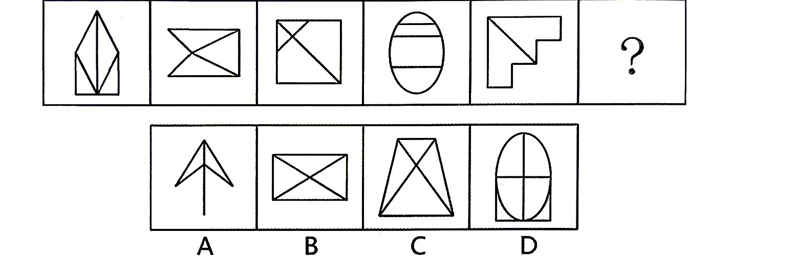
选项 A—D 见图。
答案点击查看答案与解析
元素组成不同，优先考虑属性规律。观察发现，题干图形均含有等腰元素，考虑对称性。题干均为轴对称图形，只有一条对称轴，且对称轴与原图形线条重合、不重合交替出现，故？处应选择只有一条对称轴且对称轴与原图形线条不重合的图形，只有 C 项符合。故正确答案为 C。
从所给四个选项中，选择最合适的一个填入问号处，使之呈现一定规律。
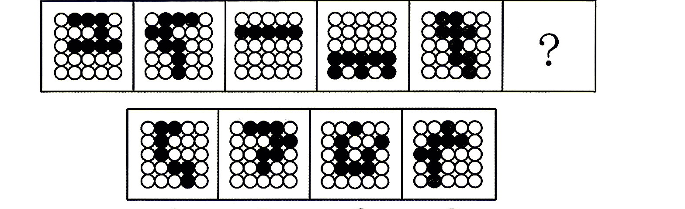
选项 A—D 见图。
答案点击查看答案与解析
元素组成不同，且无明显属性规律，优先考虑数量规律。观察发现，题干图形均由黑白球构成，且黑球、白球分堆明显，优先考虑部分数。题干每幅图的黑球均为一部分，白球为两部分、三部分交替出现，故？处应选择黑球为一部分，白球为三部分的图形，只有 D 项符合。故正确答案为 D。
从所给四个选项中，选择最合适的一个填入问号处，使之呈现一定规律。
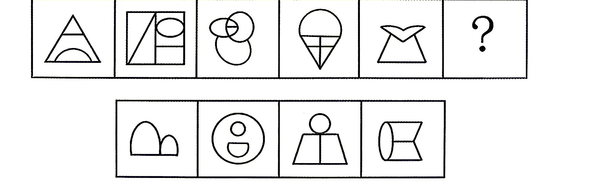
选项 A—D 见图。
答案点击查看答案与解析
元素组成不同，且无明显属性规律，优先考虑数量规律。观察发现，题干线条交叉明显，考虑数点，但整体数点无规律。继续观察发现，题干图形均有曲有直且曲线和直线相交明显，考虑曲直交点数，题干每幅图形均有 2 个曲直交点，故？处应选择具有 2 个曲直交点的图形。A 项有 3 个曲直交点，B 项有 2 个曲直交点，C项有 1 个曲直交点，D 项有 3 个曲直交点，只有 B 项符合。故正确答案为 B。
从所给四个选项中，选择最合适的一个填入问号处，使之呈现一定规律。
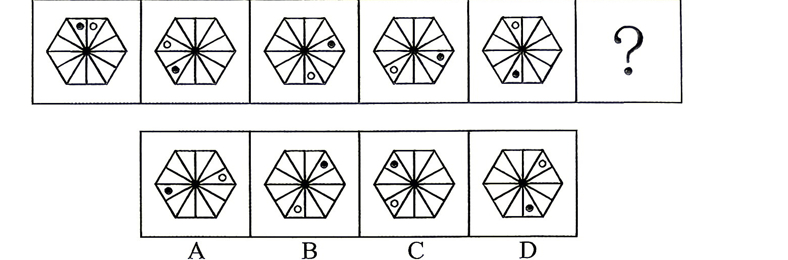
选项 A—D 见图。
答案点击查看答案与解析
元素组成相同，优先考虑位置规律。观察发现，题干中每幅图均出现一个黑点和一个白点，观察二者之间的位置关系，题干图形中黑点和白点之间
的间隔依次为 0、1、2、3、4，故？处应选择黑点和白点之间的间隔为 5 的图形，只有A 项符合。故正确答案为 A。
从所给四个选项中，选择最合适的一个填入问号处，使之呈现一定规律。
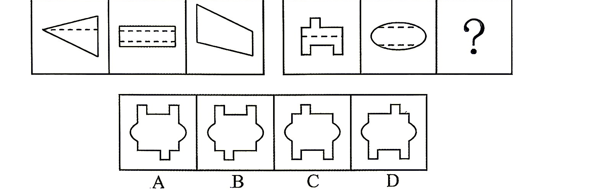
选项 A—D 见图。
答案点击查看答案与解析
元素组成不同，且无明显属性规律、数量规律。观察发现，第一组的第三个图形的下面是由第一个图虚线上半部分的三角形上下翻转组成的，中间是由第二个图虚线中间的部分组成，上面是由第一个图虚线下面部分旋转 180°组成的。第二组应用此规律，应该构成 B 项的形状。故正确答案为 B。
从所给四个选项中，选择最合适的一个填入问号处，使之呈现一定规律。
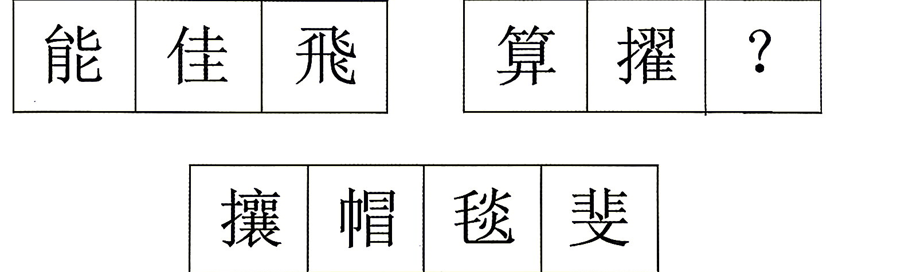
选项 A—D 见图。
答案点击查看答案与解析
观察发现，题干每个汉字均出现两个相同部分，第一组汉字中，图 1 出现两个方向相同的“匕”，图 2 出现两个方向相同的“土”，图 3 出现两个方向相同的“飞”， 且相同的部分均为上下结构； 第二组汉字中，图 1 出现两个方向相同的“ ”，图 2 出现两个方向相同的“习”，且相同的部分均为左右结构，故？处应选择包含两个方向相同的部分，且相同的部分为左右结构的汉字，只有 A 项符合。故正确答案为 A。
下面有六个英文数词，按照各自的共同特征或规律分为两类，其中分类正确的一项是：
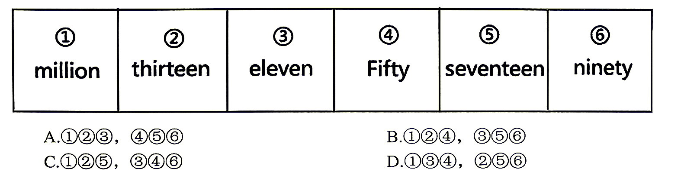
选项 A—D 见图。
答案点击查看答案与解析
观察发现，题干图形均出现重复字母，且每幅图重复字母个数分别为 2、2、1、1、2、1 个，故图①②⑤为一组，图③④⑥为一组，只有 C 项符合。故正确答案为 C。
把下面的六个图形分为两类，使每一类都有各自的共同特征或规律，分类正确的一项是：
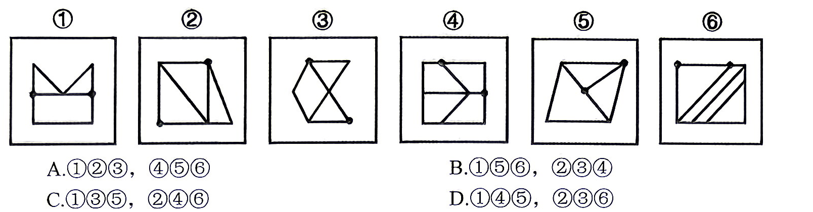
选项 A—D 见图。
答案点击查看答案与解析
本题为分组分类题目。观察发现，每幅图中均有两个黑点，优先考虑功能元素。图①④⑤中，黑点标记的两个交点均发射出 3 条线，图②③⑥中，黑点标记的一个交点发射出 3 条线，另一个交点发射出 2 条线，即图①④⑤为一组，图②③⑥为一组。故正确答案为 D。
下面 4 个立体图形均由大小相同的 8 个白色小立方体和 4 个灰色小立方体堆叠而成，其中一个立体图形的某一视图可能由纯白小方格组成，请把它找出来。
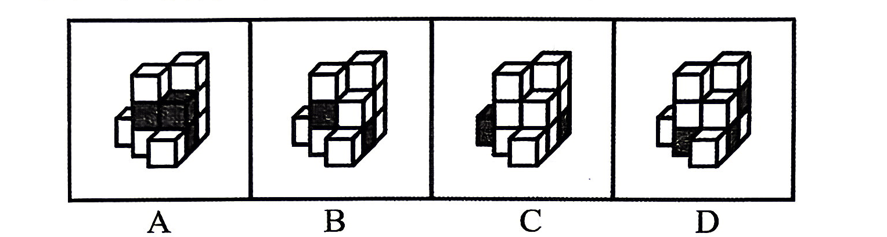
选项 A—D 见图。
答案点击查看答案与解析
本题考查三视图。A.B.C 三项中的立体图形不可能某一视图由纯白小方格组成，排除。D 项中，立体图形的正面能看到 7 个白色小立方体和 3 个灰色小立方体，所以其背面应还有 1 个白色小立方体和 1 个灰色小立方体。如下图所示，当灰色小立方体在最下层摆放，白色小立方体摆放在该灰色小立方体的上方时，其俯视图由纯白小方格组成。
故正确答案为 D。
下图是给定正方体纸盒的外表面，以下哪一项能由它折叠而成？
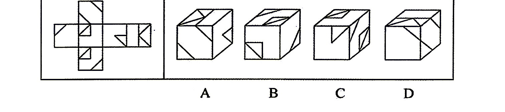
选项 A—D 见图。
答案点击查看答案与解析
本题为折纸盒。根据选项给出的共点三面，找参照面判定公共顶点连接三面的位置是否正确，判断选项。如下图：
A 项，以右侧面为参照面，定位顶点位置，返回原展开图，
发现三面位置不同，故 A 项不能由左边展开图折成，排除。
B 项，以正面为参照面，定位顶点位置，返回原展开图， ，发现
三面位置不同，故 B 项不能由左边展开图折成，排除。
C 项，以顶面为参照面，定位顶点位置，返回原展开图， ，发
现三面位置不同，故 C 项不能由左边展开图折成，排除。
D 项，以正面或顶面为参照面，定位顶点位置，返回原展开图， ，
发现三面位置与选项折叠起来的位置相同，故正确答案为 D。
冲突型决策是指利益相反且对抗竞争的各方为使自己处于有利地位所做的决策。各方都按一定规则行动，并根据他方所采用的策略和手段来决定自己应对的方法。根据上述定义，下列涉及冲突型决策的是：
A. 在举重比赛中，每位选手试举后，其余选手会根据该次试举结果调整自己下一次试举的重量
B. 甲、乙两公司都参与某项目的竞标，为了中标，双方均在标书中直接给出了接近成本的报价
C. 小张和小李在学生时代成绩就不相上下，毕业后小张创业取得了成功，小李见状也要开始创业
D. 母亲发现儿子经常偷偷玩手机游戏，不仅没收了手机，还在家中安装监控设备以监督他学习
答案点击查看答案与解析
冲突型决策的定义要点：①利益相反且对抗竞争的各方；②为使自己处于有利地位所做的决策；③各方都按一定规则行动，并根据他方所采用的策略和手段来决定自己应对的方法。
A 项，举重选手会根据其他选手的试举结果调整自己下一次试举的重量，符合定义。
B 项，竞标双方为了中标均在标书中直接给出了接近成本的报价，不符合要点③。
C 项，小张和小李是同学，而非利益相反且处于对抗竞争的双方，不符合要点①。
D 项，母亲和儿子非利益相反且处于对抗竞争的双方，不符合要点①。故本题选 A。
海洋环境化学是海洋化学的一个分支学科，也是环境科学的组成部分，主要研究海洋及相关环境中与环境质量关系密切的化学污染物的来源、迁移、分布、反应、转化、效应、归宿以及人类活动对这些过程可能产生的作用和影响。根据上述定义，下列属于海洋环境化学研究的是：
A. 针对不同的海域，选择无机和有机吸附剂进行海水提碘、提溴的研究
B. 采集77个海水样品，分析海水中各种成分的含量及含量间的比例关系
C. 通过实验室模拟，研究重金属、有机氯在长江下游水质和底质中的分布特征
D. 研究放射性核素在渤海中的存在形式和运动规律，评价渤海的放射性污染源
答案点击查看答案与解析
海洋环境化学定义的关键信息：研究海洋及相关环境中与环境质量关系密切的化学污染物。
A 项，选择无机和有机吸附剂进行海水提碘、提溴的研究，与海洋化学污染物无关，不符合定义。
B 项，研究的是海水中各种成分的含量及含量间的比例关系，与海洋化学污染物无关，不符合定义。
C 项，研究的是长江下游水质和底质中物质分布特征，研究对象不是海洋，不符合定义。
D 项，研究放射性核素在渤海中的存在形式和运动规律，符合定义。故本题选 D。
形态学标记是指通过肉眼观察或利用仪器测量动植物的外部特征(包括毛色、体型、外形、皮肤结构等），并以这种形态性状、生理性状及生态地理分布等特征作为遗传标记，来研究物种间的关系、分类和鉴定方法。根据上述定义，下列属于形态学标记的是：
A. 通过标记动物癌细胞DNA序列变异，诊断和分析肿瘤种类
B. 通过标记小鼠、牛、马等动物体内血清蛋白变化，判断其免疫系统状态
C. 通过标记株高、穗长、粒色等性状，分析济麦、淮麦等小麦品种间的亲缘关系
D. 标记雏鸡羽毛生长速度，通过分析羽毛染色体上等位基因的差异，将雏鸡划分为慢羽雏鸡和快羽雏鸡
答案点击查看答案与解析
形态学标记的定义要点：①通过肉眼观察或利用仪器测量动植物的外部特征；②以形态性状、生理性状及生态地理分布等特征作为遗传标记，来研究物种间的关系、分类和鉴定。
A 项，动物癌细胞 DNA 序列不属于动植物的外部特征，不符合要点①。
B 项，动物体内血清蛋白不属于动植物的外部特征，不符合要点①。
C 项，通过标记株高、穗长、粒色等外部特征，研究植物亲缘关系，符合定义。
D 项，等位基因不属于动植物的外部特征，不符合要点①。故本题选 C。
文言文常用省略句式。兼语省略是其中一种，即句中“使”“命”“令”这类动词的宾语常兼作后边一个主谓词组的主语，这个词就称作兼语，而这个兼语在动宾结构的短句中被省略了。根据上述定义，下列属于兼语省略的是：（1）不如因而厚遇之，使归赵。(2）乃令骑皆下马步行，持短兵接战。（3）扶苏以数谏故，上使外将兵。（4）王使屈平为令，众莫不知。
A. (1) (2)
B. (1) (3)
C. (2) (4)
D. (3)(4)
答案点击查看答案与解析
兼语省略定义的关键信息：句中“使”“命”“令”这类动词的宾语，常兼作后边一个主谓词组的主语，且在动宾结构的短句中被省略。（1）的意思是：不如趁此好好款待他，放他回到赵国。其中“使归赵”省略了“之”，即“使（之）归赵”，“之”是“使”的宾语，又是“归赵”的主语，符合定义。（2）的意思是：命令骑兵都下马步行，手持短兵器与追兵交战。其中“令”的宾语是“骑兵”，“骑兵”又是“下马步行”的主语，宾语并未省略，不符合定义。（3）的意思是：扶苏因为屡次劝谏，皇上派（他）在外面带兵。其中“使外将兵”省略了“扶苏”，即“上使（扶苏）外将兵”，“扶苏”是“使”的宾语，又是“将兵”的主语，符合定义。（4）的意思是：大王叫屈平制订法令，大家没有不知道的。其中“使”的宾语是“屈平”，“屈平”又是“为令”的主语，宾语并未省略，不符合定义。综上，属于兼语省略的是（1）（3）。故本题选 B。
统联是指前后两个句段的统摄和被统摄关系。统摄即统领、总辖。回向统联是指后段统摄前段，当前段不止一段时，先行各段都是末段所指的具体内容。根据上述定义，下列属于回向统联的是：
A. 他说，他欺骗了我，他是一个卑鄙小人
B. 我说去爬山，你说去游泳，他说去打球
C. 医生让我通知你，十分钟以后去他诊室
D. 你被批评了，你心里难受，我是知道的
答案点击查看答案与解析
回向统联定义的关键信息：后段统摄前段，当前段不止一段时，先行各段都是末段所指的具体内容。
A 项，后面两个分句“他欺骗了我”“他是一个卑鄙小人”均是“他说”的内容，不属于后段统摄前段，不符合定义。
B 项，三个分句之间是并列关系，不属于后段统摄前段，不符合定义。
C 项，后面一个分句“十分钟以后去他诊室”是前面一个分句“医生让我通知你”的具体内容，不属于后段统摄前段，不符合定义。
D 项，前面两个分句“你被批评了”“你心里难受”均是第三个分句“我是知道的”所指的具体内容，符合定义。故本题选 D。
热处理是指对固态金属或合金采用适当方式加热、保温和冷却，通过改变工件内部的显微组织，或改变工件表面的化学成分，以获得所需要的组织结构与性能的加工方法。根据上述定义，下列不属于热处理的是：
A. 将铅块加热，熔炼成符合一定要求的液体并浇进铸型里，经冷却凝固、清整处理铸体表面的不规则部分以后，得到有预定形状、尺寸的铸件
B. 将钢加热到适宜温度并保温一段时间后，从炉中取出置于空气中喷水、喷雾或吹风冷却，使晶粒细化和碳化物分布均匀化，改善其切削性能
C. 把合金钢放入密封容器，通入氨气，加热保温，氨气热分解产生的活性氮原子吸附到金属表面，并扩散渗入表层内，以获得优良的表面性能
D. 将钢加热到临界温度以上，保温一定时间后进行冷却，然后在某一适当温度长时间保温，再冷却，调整钢材内部结构和状态，以降低其脆性
答案点击查看答案与解析
热处理的定义要点：①固态金属或合金；②采用适当方式加热、保温和冷却；③改变工件内部的显微组织，或改变工件表面的化学成分，以获得所需要的组织结构与性能的加工方法。
A 项，将铅块加热熔化成液体并浇进铸型里得到有预定形状、尺寸的铸件，并不涉及改变工件内部的显微组织或工件表面的化学成分，不符合要点③。
B 项，将钢加热后保温，通过喷水、喷雾或吹风冷却来细化晶粒，以改善切削性能，符合定义。
C 项，合金钢通入氨气加热保温，氮原子渗入表层，以获得优良的表面性能，符合定义。
D 项，钢加热到临界温度保温一定时间后冷却，在适当温度保温、冷却，以此改变钢材内部结构，降低脆性，符合定义。故本题选 A。
“虚假二难”指的是将两个并非彼此矛盾的概念或者事项，人为地对立起来，让人们在两者之中做出选择的逻辑错误。根据上述定义，下列不涉及“虚假二难”的是：
A. 你认为是朋友可靠，还是亲戚可靠
B. 究竟是吃加碘盐好，还是吃低碘盐好
C. 你认为高枕必无忧，还是高枕未必无忧
D. 你究竟是站在武力一边，还是正义一边
答案点击查看答案与解析
虚假二难的定义要点：①两个并非彼此矛盾的概念或者事项；②人为地对立起来；③让人们在两者之中做出选择。
A 项，将并非矛盾的“朋友可靠”与“亲戚可靠”对立，让人们在两者之中做出选择，符合定义。
B 项，将并非矛盾的“加碘盐”与“低碘盐”对立，让人们在两者之中做出选择，符合定义。
C 项，“高枕必无忧”与“高枕未必无忧”是逻辑上的矛盾关系，不符合要点①。
D 项，将并非矛盾的“武力”与“正义”对立，让人们在两者之中做出选择，符合定义。故本题选 C。
正约数指的是一个整数中大于0 的约数。若自然数a 的正约数（除a 自身）之和等于另一个自然数b，而b的正约数（除b自身）之和等于a，则称
A. b互为亲和数；若自然数a的正约数（除a自身）之和等于另一个自然数b，而b的正约数（除b自身）之和不等于a，则称a是b的单亲和数；若自然数a的正约数（除a自身）b互为非亲和数。根据上述定义，下列选项中存在单亲和数的是：10、16
B. 11、21
C. 15、18
D. 22、28
答案点击查看答案与解析
单亲和数定义的关键信息：自然数 a 的正约数（除 a 自身）之和等于另一个自然数 b，而 b 的正约数（除 b 自身）之和不等于 a。
A 项，10 的正约数有 1，2，5，10，除去自身 10，剩下约数之和是 8，与另一个自然数 16 不相等；16 的正约数有 1，2，4，8，16，除去自身 16，剩下的约数之和是 15，与另一个自然数 10 不相等，不符合定义。
B 项，11 的正约数有 1，11，除去自身 11，剩下约数之和是 1，与另一个自然数 21不相等；21 的正约数有 1，3，7，21，除去自身 21，剩下的约数之和是 11，与另一个自然数 11 相等，符合定义。
C 项，15 的正约数有 1，3，5，15，除去自身 15，剩下约数之和是 9，与另一个自然数 18 不相等；18 的正约数有 1，2，3，6，9，18，除去自身 18，剩下的约数之和是21，与另一个自然数 15 不相等，不符合定义。
D 项，22 的正约数有 1，2，11，22，除去自身 22，剩下约数之和是 14，与另一个自然数 28 不相等；28 的正约数有 1，2，4，7，14，28，除去自身 28，剩下的约数之和是 28，与另一个自然数 22 不相等，不符合定义。故本题选 B。
思维反刍指个体在经历消极事件后或者面对压力时，反复思考的过程。它的类型包括消极型思维反刍和积极型思维反刍，前者是指比较当前状况和不能实现的目标之间的差距却不思解决；后者是指有目的地思考并寻找解决问题的方法。根据上述定义，下列属于积极型思维反刍的是：
A. 小赵评优落选后认真比较了自己和优秀员工的差距，找到了努力的方向和途径
B. 小钱毕业之前去多个单位实习积累经验，希望在毕业后能找到一份理想的工作
C. 小孙在工作中犯了错误受到单位的处分，内心颇为不服，觉得是领导故意为难他
D. 小李看到好友在经历了长时间复习后依然考研失败，他认为好友的学习方法不当
答案点击查看答案与解析
积极型思维反刍定义的关键信息：个体在经历消极事件后或者面对压力时，有目的地思考并寻找解决问题的方法。
A 项，小赵评优落选后，比较自身与优秀员工的差距并找到努力方向，通过比较差距，明确改进方向和途径，符合定义。
B 项，小钱毕业前实习积累经验以寻找理想工作，属于主动规划，未涉及经历消极事件或压力，不符合定义。
C 项，小孙因错误受处分后认为领导为难自己，反而归咎他人，经历消极事件后未尝试解决问题，不符合定义。
D 项，小李认为好友考研失败是因为学习方法不当，小李是旁观者，未经历自身消极事件，不符合定义。故本题选 A。
条件联系指的是一事物情况的存在与否对另一事物情况的存在与否的制约或依赖关系。p是q的充分条件指的是当有事物情况p，就有事物情况q；p是q的必要条件指的是当没有事物情况p，就没有事物情况q。根据上述定义，对下列句子的条件联系表述正确的是：（1）a 能被21 整除；（2）a能被7整除；(3）b各个数位上的数之和是3的倍数；(4) b 能被 6 整除。
A. （1）是（2）的充分条件，（3）是（4）的充分条件
B. （1）是（2）的充分条件，（3）是（4）的必要条件
C. （1）是（2）的必要条件，（3）是（4）的充分条件
D. （1）是（2）的必要条件，（3）是（4）的必要条件一组与之在逻辑关系上最为贴近、相似或匹配的词。
答案点击查看答案与解析
条件联系定义的关键信息：一事物情况的存在与否对另一事物情况的存在与否的制约或依赖关系。p 为 q 的充分条件指当有事物情况 p，就有事物情况 q；p 为 q 的必要条件指当没有事物情况 p，就没有事物情况 q。分析（1）（2）的关系。当 a 能被 21 整除，则 a 一定能被 7 整除，即当（1）成立，（2）一定成立，故（1）是（2）的充分条件。分析（3）（4）的关系。当 b 各个数位上的数之和不是 3 的倍数，则 b 不能被 6 整除，即当（3）不成立，则（4）一定不成立，故（3）是（4）的必要条件。故本题选 B。
知了：蝉
A. 花菜：包菜
B. 手枪：机枪
C. 芭乐：番石榴
D. 布洛芬：止痛药
答案点击查看答案与解析
知了又称蝉二者为全同关系。
A 项，花菜与包菜为两种不同的蔬菜，二者为并列关系，与题干逻辑关系不一致，排除；B 项，手枪与机枪为两种不同的武器，二者为并列关系，与题干逻辑关系不一致，排除；C 项，芭乐又称番石榴，二者为全同关系，与题干逻辑关系一致，当选；D 项，布洛芬是止痛药的一种，二者为种属关系，与题干逻辑关系不一致，排除。故正确答案为 C。
生长：养分
A. 倾听：歌声
B. 制动：摩擦
C. 切割：毛坯
D. 观察：路径
答案点击查看答案与解析
生长需要养分，二者为条件对应关系。
A 项，倾听歌声，二者为动宾关系，与题干逻辑关系不一致，排除；B 项，制动是指使运行中的机车、车辆及其他运输工具或机械等停止或减低速度的动作，制动需要摩擦，二者为条件对应关系，与题干逻辑关系一致，当选；C 项，切割毛坯，二者为动宾关系，与题干逻辑关系不一致，排除；D 项，观察路径，二者为动宾关系，与题干逻辑关系不一致，排除。故正确答案为 B。
纸张：试卷
A. 商务手机：智能手机
B. 黑色金属：有色金属
C. 面包：蘑菇
D. 糯米：汤圆
答案点击查看答案与解析
纸张是制成试卷的原材料，二者为材料的对应关系。
A 项，目前的商务手机都是智能手机，与题干逻辑关系不一致，排除；B 项，金属材料分为黑色金属和有色金属，二者为并列关系，与题干逻辑关系不一致，排除；C 项，面包与蘑菇都是食物的一种，二者为并列关系，与题干逻辑关系不一致，排除；D 项，糯米是制作汤圆的原材料，二者为材料的对应关系，与题干逻辑关系一致，当选。故正确答案为 D。
举杯邀明月，对影成三人：光的直线传播
A. 伤心桥下春波绿，曾是惊鸿照影来：光的折射
B. 可怜九月初三夜，露似真珠月似弓：凝华
C. 花气袭人知骤暖，鹊声穿树喜新晴：分子不停做无规则运动
D. 夕阳返照桃花坞，柳絮飞来片片红：固体传声
答案点击查看答案与解析
“举杯邀明月，对影成三人”中的“影”是光沿直线传播形成的，二者为诗句和其体现的物理现象的对应关系。
A 项，“伤心桥下春波绿，曾是惊鸿照影来”意思是那座令人伤心的桥下春水依然碧绿，当年我曾在这里见到她美丽的身影，其中桥下春水映照的身影体现的是光的反射，而不是光的折射，与题干逻辑关系不一致，排除；
B 项，“可怜九月初三夜，露似真珠月似弓”意思是最可爱的是那九月初三之夜，露珠似颗颗珍珠，朗朗新月形如弯弓，其中露珠是水蒸气在遇冷时凝结成液态的水珠，体现的是液化现象，而不是凝华，与题干逻辑关系不一致，排除；
C 项，“花气袭人知骤暖，鹊声穿树喜新晴”意思是花香扑人，便知天气暖和了，天气晴朗，喜鹊的叫声透过树林传出来，其中花香是花朵分泌的芳香油分子在空气中做无规则运动的结果，二者为诗句和其体现的物理现象的对应关系，与题干逻辑关系一致，当选；
D 项，“夕阳返照桃花坞，柳絮飞来片片红”意思是在夕阳的映照下，桃花坞的桃花呈现出红色，而柳絮则因为反射了桃花的红光而显得淡红色，其中柳絮变成红色体现的是光的反射，而不是固体传声，与题干逻辑关系不一致，排除。故正确答案为 C。
新闻联播：新闻节目：电视节目
A. 镰刀：农具：工具
B. 编剧：编导：导演
C. 公交卡：公交车：机动车
D. 玻璃瓶子：玻璃制品：塑料制品
答案点击查看答案与解析
判断题干词语间逻辑关系：新闻联播是一档新闻节目，二者为种属关系；新闻节目是指以新闻材料为基础，加工制作而成的电视节目，二者为种属关系。新闻联播是一档电视节目，二者为种属关系。
A 项：镰刀是一种农具，二者为种属关系；农具是农业生产使用的工具，二者为种属关系，与题干逻辑关系一致，当选；B 项：编剧是剧本的作者，编导是在广播电视领域，负责选题、组织拍摄、后期剪辑的人员，导演是创作影视作品的组织者和领导者，三者是三种不同的职业，为并列关系，与题干逻辑关系不一致，排除；C 项：公交卡是乘坐公交车付费时使用的工具，二者为对应关系，与题干逻辑关系不一致，排除；D 项：玻璃瓶子是一种玻璃制品，二者为种属关系；玻璃制品和塑料制品是两种不同材质的用品，二者为并列关系，与题干逻辑关系不一致，排除。故正确答案为 A。
地铁：摩天大楼：城市
A. 岛屿：冰山：南极
B. 行星：恒星：宇宙
C. 鸟巢：果实：树干
D. 沼泽：候鸟：湿地
答案点击查看答案与解析
地铁和摩天大楼是城市的组成部分，前两个词和第三个词为组成关系。
A 项：南极字面意思就是地球的最南端，与岛屿和冰山无关。若把南极看作日常使用中的南极洲，则南极洲由大陆、陆缘冰、岛屿组成，而冰山是指落入海中漂浮的大块淡水冰，并不是南极洲的组成部分，与题干逻辑关系不一致，排除；
B 项：行星和恒星是宇宙的组成部分，前两个词和第三个词为组成关系，与题干逻辑关系一致，当选；
C 项：鸟巢可以搭建在树干上，而果实和树干都是果树的不同部分，二者与树干均不是组成关系，与题干逻辑关系不一致，排除；
D 项：沼泽是一种湿地，二者为种属关系，与题干逻辑关系不一致，排除。故正确答案为 B。
闹钟：提醒：便利贴
A. 轮椅：代步：自行车
B. 陈皮：祛痰：牛奶
C. 马克杯：陶瓷：花瓶
D. 取暖：暖宝宝：热水袋
答案点击查看答案与解析
闹钟和便利贴都有提醒的功能，第一个词和第三个词分别与第二个词构成功能的对应关系。
A 项，轮椅和自行车都有代步的功能，第一个词和第三个词分别与第二个词构成功能的对应关系，与题干逻辑关系一致，当选；
B 项，陈皮有祛痰的功能，二者为功能的对应关系，牛奶没有祛痰的功能，二者无明显逻辑关系，与题干逻辑关系不一致，排除；
C 项，陶瓷可以制作马克杯，陶瓷也可以制作花瓶，第二个词分别与第一个词和第三个词均为原材料与成品的对应关系，与题干逻辑关系不一致，排除；
D 项，暖宝宝和热水袋都有取暖的功能，第二个词和第三个词分别与第一个词构成功能的对应关系，与题干顺序不一致，排除。故正确答案为 A。
推拉门：木门：防盗门
A. 喇叭裤：亚麻裤：运动裤
B. 地铁：轻轨：轨道交通
C. 红茶：奶茶：下午茶
D. 储物柜：衣帽间：组合柜
答案点击查看答案与解析
推拉门是根据门的开启方式划分，木门是根据门的材质划分，防盗门是根据门的功能划分，三者为交叉关系。
A 项：喇叭裤是根据裤子的版型划分，亚麻裤是根据裤子的材质划分，运动裤是根据裤子的功能划分，三者为交叉关系，与题干逻辑关系一致，当选；
B 项：地铁和轻轨是两种不同的轨道交通，二者为并列关系，均与第三词构成种属关系，与题干逻辑关系不一致，排除；
C 项：奶茶和红茶是两种不同的饮品，二者为并列关系，下午茶是一种介于午餐与晚餐之间的餐饮方式，与前两词均不是交叉关系，与题干逻辑关系不一致，排除；
D 项：储物柜是根据柜的功能划分，组合柜是根据柜的搭配形式划分，二者为交叉关系，但衣帽间是供家庭成员存储、收放、更衣和梳妆的专用空间，与储物柜和组合柜不是交叉关系，与题干逻辑关系不一致，排除。故正确答案为 A。
针：（）：缝合相当于秤杆：秤砣：（）。
A. 顶针；质量
B. 皮尺；秤星
C. 棉线；称重
D. 衣服；砝码
答案点击查看答案与解析
逐一代入选项。
A 项，针和顶针可以搭配使用，二者为配套使用的对应关系，针和顶针搭配可用于缝合，二者和缝合为功能对应关系；秤杆和秤砣可以搭配使用，二者为配套使用的对应关系，但二者的功能是测量质量，而非质量，前后逻辑关系不一致，排除；
B 项，皮尺和缝合，二者无明显逻辑关系，针可以用来缝合，二者为功能对应关系；秤砣和秤星，二者无明显逻辑关系，秤杆上有秤星，二者为位置对应关系，前后逻辑关系不一致，排除；
C 项，针和棉线可以搭配使用，二者为配套使用的对应关系，针和棉线搭配可用于缝合，二者和缝合为功能对应关系；秤杆和秤砣可以搭配使用，二者为配套使用的对应关系，秤杆和秤砣搭配可用于称重，二者和称重为功能对应关系，前后逻辑关系一致，当选；
D 项，缝合衣服，二者为动宾关系；用于秤上的砝码常称为砣，秤砣是砝码的一种，二者为种属关系，前后逻辑关系不一致，排除。故正确答案为 C。
物理学对于 （）相当于（）对于生命
A. 科学；运动
B. 物质；生物学
C. 牛顿；达尔文
D. 化学；人工智能置疑的，要求你根据这段陈述，选择一个答案。注意：正确的答案应与所给的陈述相符合，不需要任何附加说明即可从陈述中直接推出。
答案点击查看答案与解析
逐一代入选项。
A 项，物理学是科学研究领域的一种学科，二者为种属关系，运动和生命二者无明显逻辑关系，前后逻辑关系不一致，排除；
B 项，物质是物理学研究的对象，二者为研究对象的对应关系，生命是生物学研究的对象，二者为研究对象的对应关系，前后逻辑关系一致，当选；
C 项，牛顿是物理学的重要奠基人和推动者，达尔文通过提出进化论和自然选择理论，揭示了生命的动态性，前后逻辑关系不一致，排除；
D 项，物理学和化学是不同的学科，二者为并列关系，人工智能指通过计算机程序模拟人类的认知功能，包括学习、推理、问题解决、理解自然语言和感知等，人工智能没有生命，二者为反向属性关系，前后逻辑关系不一致，排除。故正确答案为 B。
新能源电池的安全问题，长期制约着产业发展。传统电池起火的原因在于“热失控”——电池内部温度异常升高后，电解液分解、隔膜熔缩，引发连锁反应，最终导致起火爆炸。近日，中国科学院物理研究所成功开发出一种具有自保护功能的可聚合不燃电解质（PNE），首次实现安时级钠离子电池“无热失控”。该电池兼具极好的宽温性能和耐高压稳定性。有人据此认为，钠电池将大规模取代锂电池，成为我国新能源乘用车中更为常用的电池。以下哪项如果为真，不能作为上述观点的依据？（）
A. 当电池温度异常升高时，PNE会自动由液态固化为致密屏障，彻底切断热失控传播路径
B. 该项技术已从实验室的毫克级小样放大到了可实际应用的工程化尺寸，产业化门槛被实质性跨越
C. 锂在地壳中的含量仅为0.006%，且70%集中在南美“锂三角”；而钠在地壳中的含量高达 2.75%，是锂的 400 多倍
D. 今年2月，CA汽车与ND能源公司联合发布全球首款搭载钠电池的乘用车，纯电续航超400公里，预计年中上市
答案点击查看答案与解析
题干结论：钠电池将大规模取代锂电池，成为我国新能源乘用车中更为常用的电池。题干论据：中国科学院物理研究所成功开发出一种具有自保护功能的可聚合不燃电解质（PNE），该电池兼具极好的宽温性能和耐高压稳定性。分析选项，不能作为题干结论论据的。
A 项介绍 PNE 电解质遇高温可形成防护屏障、阻断热失控，说明确实具有极好的宽温性能和耐高压稳定性，解释原因，可以加强，排除；B 项说明该技术已完成工程化放大、跨越产业化门槛，为钠电池大规模普及提供现实条件，可以加强，排除；C 项说明地壳中钠含量比锂含量更高，为钠电池大规模普及提供现实条件，可以加强，排除；D项说明个别钠电池纯电续航情况，个例存在不能说明能大规模取代之前的锂电池，话题不一致，为无关项，当选。故正确答案为 D。
依托人工智能大模型的强大能力，从互动 AI 机器人到五花八门的AI社交产品，再到游戏中可深度互动的AI角色，都能化身“AI伴侣”。凭借随时在线、深度理解与精准回应，AI正成为许多人专属的倾听者、陪伴者，甚至“完美恋人”。然而，许多人发现自己正在陷入一种困境：原本是为了缓解孤独才选择的“AI伴侣”，却让自己陷入了更深的孤独，虽在虚拟世界里与A“相知相爱”，实则却将自己困在一个情感孤岛中，越依赖，越孤独，最终形成恶性循环。以下哪项如果为真，最能解释人们的这种“困境”？（）
A. 对于社交焦虑者、空巢老人、刚经历失恋的人，AI提供了一个没有社交压力的练习场，用户可以在与AI的对话中练习那些难以启齿的表达
B. 使用AI陪伴后，用户在网络上发帖虽然更频繁地涉及人际关系话题，但负面情绪信号也显著增加，出现了更多关于孤独、抑郁甚至自杀念头的语言Upwand Education
C. 长期沉溺于AI的虚拟陪伴会抬高用户面对现实人际关系的心理门槛，使人更难适应现实关系中的复杂性、不确定性和情感投入，进而减少与他人的主动联系
D. 研究表明，AI的“奉承”程度比人类高出近50%，因为“AI伴侣”设计的核心目标是延长用户使用时长，所以AI倾向于提供“让人舒服”的回答，而非保持理性与客观
答案点击查看答案与解析
解释型题，找出题干矛盾。原本是为了缓解孤独才选择的“AI伴侣”，却让自己陷入了更深的孤独，虽在虚拟世界里与 AI“相知相爱”，实则却将自己困在一个情感孤岛中，越依赖，越孤独，最终形成恶性循环。
A 项说明 AI 可以为社交焦虑者、空巢老人、刚经历失恋的人提供社交练习，与“AI伴侣”为何让人被困在情感孤岛，越来越孤独无关，不能解释题干矛盾，排除；
B 项说明使用 AI 陪伴后会显著增加负面情绪，与“AI 伴侣”为何让人被困在情感孤岛，越来越孤独无关，不能解释题干矛盾，排除；
C 项说明长期沉溺于 AI 的虚拟陪伴会减少与他人的主动联系，主动减少现实人际联系会导致在现实生活中无人社交，最终陷入更深孤独，解释了越依赖 AI 伴侣越孤独的恶性循环，可以解释题干矛盾，当选；
D 项说明 AI 倾向于提供“让人舒服”的回答，而非保持理性与客观，与“AI 伴侣”为何让人被困在情感孤岛，越来越孤独无关，不能解释题干矛盾，排除。故正确答案为 C。
某篇论文提出：通过对独角兽企业（成立时问不超过10年、估值超10亿美元且商业模式难以被复制的未上市创业公司）创始人的追踪分析发现，92%的独角善企业创始人保持“晨型作息”（5:30前起床），远高于普通人群的12%。作者据此断言：晨型作息是创新创业成功的关键。以下哪项如果为真，最能反驳该作者的结论？（）
A. 保持“晨型作息”的人，平均每天工作时长比普通人群长2小时
B. 研究中的“普通人群”数据包含退休人员和无业者，未控制年龄与职业状态变量
C. 神经科学研究显示，部分人群的生物钟负反馈调控系统中CRY1 基因突变导致其生理效率峰值天然分布在午后
D. 样本中估值最高（超百亿美元）的5家企业，其创始人均在不同场合公开表示他们大多数创造性成果是在夜间（21:00—3:00）工作时取得的
答案点击查看答案与解析
题干结论判断：晨型作息是创新创业成功的关键。论据：通过对独角兽企业创始人的追踪分析发现，92%的独角兽企业创始人保持“晨型作息”（5：30 前起床），远高于普通人群的 12%。题干根据 92%和 12%的比例对比，得出，晨型作息是创新创业成功的关键。
A 项说明保持“晨型作息”的人，平均每天工作时长比普通人群长 2 小时，提出了创新创业成功的其他原因，为他因削弱，保留；
B 项指出追踪分析对照组中普通人群数据不科学，未控制年龄、职业变量，证明分析中的 12%的比例有其他特殊变量影响，不具有可比性，无法得出晨型作息是创新创业成功的关键，切断联系，削弱题干结论，保留；
C 项说明有的人生理效率峰值天然分布在午后，与晨型作息是否是创新创业成功的关键无关，为无关项，排除；
D 项说明样本中估值最高（超百亿美元）的 5 家企业，其创始人的大多数创造性成果是在夜间（21:00—3:00）工作时取得的，成果取得时间与晨型作息之间的关系不明确，无法削弱，排除。对比 A、B 项，切断联系削弱力度大于他因削弱，B 项削弱力度更强。故正确答案为 B。
某公司举办年会，共设歌舞、小品和魔术三类节目，业务一、二、三、四部都均报名表演，每个部门演两类节目，报名结果显示，2个部门表演歌舞，3个部门表演小品，3个部门表演魔术，已知：（1）只有一部和二部中有部门表演歌舞，三部才表演魔术：（2）只有三部表演小品，二部和四部中才有部门表演歌舞；（3）如果一部和三部中有部门表演魔术，则四部表演小品；（4）一部和二部均表演小品。由此可得知，表演歌舞的有（）。
A. 二部、四部
B. 一部、三部
C. 三部、四部
D. 一部、四部
答案点击查看答案与解析
分析题干：（1）三部魔术 ⇒ 一部歌舞或二部歌舞（2）二部歌舞或四部歌舞 ⇒ 三部小品（3）一部魔术或三部魔术 ⇒ 四部小品（4）一部小品且二部小品题干已知：每个部门演两类节目，2 个部门表演歌舞，3 个部门表演小品，3 个部门表演魔术假设三部表演小品，根据条件（4）（5），表演小品的是一部、二部和三部，四部不表演小品，是对条件（3）的否后，否后必否前，可得一部不表演魔术且三部不表演魔术，与条件（5）矛盾，假设不成立，因此三部不表演小品，是对条件（2）的否后，否后必否前，可得二部不表演歌舞且四部不表演歌舞，结合条件（5），表演歌舞的是一部和三部，只有 B 项符合。故正确答案为 B。
“快，喝碗姜汤，盖厚被子睡一觉，出出汗就好了！”许多人将“捂汗”这种流传已久的民间疗法视为治疗感冒的捷径。他们认为，感冒患者只需盖上厚重的被褥，大量出汗，即可将病毒排出体外，从而缓解症状、治愈感冒。以下哪项如果为真，最能质疑上述说法？（）
A. 大多数感冒具有自限性，普通人通常无需额外干预，5—7天即可痊愈
B. 汗液成分以水和电解质为主，人体出汗的主要功能是调节体温，无法排出病毒
C. 儿童的体温调节中枢尚未发育完善，“捂汗”可能导致体温急剧升高，加重病情
D. 过度出汗会导致人体大量失水，可能引起脱水和电解质紊乱，让人感到虚弱、头晕
答案点击查看答案与解析
题干结论：感冒患者只需盖上厚重的被褥，大量出汗，即可将病毒排出体外，从而缓解症状、治愈感冒。
A 项说明大多数感冒无需额外干预，5—7 天即可痊愈，与“捂汗”能否将感冒病毒排出体外，缓解症状、治愈感冒无关，不能削弱，排除；
B 项说明人体出汗的主要功能是调节体温，无法排出病毒，即“捂汗”无法将感冒病毒排出体外，不能缓解症状、治愈感冒，可以削弱，保留；
C 项说明“捂汗”可能导致儿童体温急剧升高，加重病情，即儿童感冒时无法通过“捂汗”治愈，可以削弱，保留；
D 项说明过度出汗会导致人体大量失水，可能引起脱水和电解质紊乱，让人感到虚弱、头晕，与“捂汗”能否将感冒病毒排出体外，缓解症状、治愈感冒无关，不能削弱，排除。对比 B 项和 C 项，B 项直接削弱论点，而 C 项仅针对儿童这一部分人群进行削弱，因此 B 项削弱力度更强。故正确答案为 B。
甲、乙、丙、丁4名学生来自数学学院、物理学院、化学学院和哲学学院。询问他们来自哪个学院时，其中3人做出如下回答。甲：乙不是数学学院的学生；乙：丙是哲学学院的学生；丙：丁不是化学学院的学生。已知上述3人中只有1人说了实话，且该学生是哲学学院的。由此可以推出（）。
A. 甲来自化学学院
B. 乙来自哲学学院
C. 丙来自数学学院
D. 丁来自物理学院
答案点击查看答案与解析
分析题干：甲：乙不是数学学院的学生乙：丙是哲学学院的学生丙：丁不是化学学院的学生已知只有哲学院的学生说实话，所以先从哲学院的学生入手。乙的话“丙是哲学学院的学生”涉及哲学院的学生，假设“丙是哲学学院的学生”为真，则乙和丙都说实话，与题干条件矛盾，因此“丙是哲学学院的学生”为假，乙和丙都不是哲学院的学生，都说假话，那么说真话的只能是甲，甲是哲学学院的学生，乙不是数学学院的学生。由丙说假话可得丁是化学学院的学生，那么乙只能是物理学院的学生，丙是数学学院的学生。只有 C项符合。故正确答案为 C。
为了提升公司内部的技术创新能力，公司成立之初组建了技术创新小组，该小组的部分成员拥有高级技术职称。近日，出于降本增效考虑，公司所有高管都赞同解散该小组的决定，但该小组所有成员都反对这一决定。由此可以得出，该公司内（）。
A. 有些拥有高级技术职称的员工不是高管
B. 所有高管都没有高级技术职称
C. 该小组的成员都拥有高级技术职称
D. 有些高管拥有高级技术职称
答案点击查看答案与解析
根据题干条件文氏图分析概念关系：
A 项，有些拥有高级技术职称的员工不是高管，根据图示可以推出，当选；
B 项，所有高管都没有高级技术职称，“高级技术职称”是点，不确定“高管”对于点的关系，该项无法推出，排除；
C 项，该小组成员都拥有高级技术职称，有的推不出所有，该项无法推出，排除；
D 项，有些高管拥有高级技术职称，根据图示，无法得知高管是否具有高级技术职称，该项无法推出，排除。故正确答案为 A。
有研究显示，电子游戏在促进中国文化出海方面具有极大优势，其互动机制允许玩家深度参与文化叙事，游戏场景设计可突破时空壁垒实现即时触达，沉浸式体验则能强化文化记忆。有学者据此提出，电子游戏的沉浸性和全球可及性，使其成为中国文化出海的重要载体。以下选项如果为真，最能支持上述结论的是（）。
A. 海外玩家在游戏中深度参与文化叙事，能够促使他们主动搜索了解相关文化背景
B. 有调查显示，许多外国人通过观看华语电影和阅读中文书籍了解和学习中国文化
C. 近期多款电子游戏在国内游戏平台上架后销售火爆，受到许多玩家的追捧
D. 有研究发现，玩家探索游戏场景时激活的脑部区域与观看历史文化纪录片时激活的脑区高度重合
答案点击查看答案与解析
题干结论：电子游戏的沉浸性和全球可及性，使其成为中国文化出海的重要载体。论据：有研究显示，电子游戏在促进中国文化出海方面具有极大优势，其互动机制允许玩家深度参与文化叙事，游戏场景设计可突破时空壁垒实现即时触达，沉浸式体验则能强化文化记忆。
A 项说明海外玩家在游戏中的深度参与会使玩家主动了解文化背景，即海外玩家可以在游戏中了解中国文化，说明电子游戏确实成为了中国文化出海的载体，补充论据，为加强项，当选；
B 项说明调查指出许多外国人通过看电影和阅读书籍了解中国文化，与电子游戏是否是中国文化出海的重要载体无关，不能加强，排除；
C 项说明许多电子游戏在国内销售火爆，与电子游戏是否是中国文化出海的重要载体无关，不能加强，排除；
D 项说明玩家探索游戏场景时激活的大脑区域和看纪录片时激活的区域重合度较高，与电子游戏是否是中国文化出海的重要载体无关，不能加强，排除。故正确答案为 A。
植物需要光合作用，珊瑚不是植物，因此珊瑚不需要光合作用。下列选项与题干论证方式最为相似的是（）。
A. 光合作用是植物将光能转化为化学能的过程，而动物主要通过捕食获取化学能量，因此光合作用不是动物获取能量的主要途径
B. 应届毕业生已修完所有课程，校友不是应届毕业生，因此校友没有修完所有课程
C. 狗的白齿发达，狗不是猫科动物，因此猫科动物的白齿不发达
D. 汉语言专业的学生不是理科生，小明不是汉语言专业的学生，因此小明是理科生
答案点击查看答案与解析
题干的论证结构是：植物需要光合作用（A 是 B），珊瑚不是植物（C 不是 A）⇒珊瑚不需要光合作用（C 不是 B）。
A 项论证结构是：A 是 B，C 不是 B ⇒ A 不是 D，与题干推理形式不一致，排除；
B 项论证结构是：A 是 B，C 不是 A ⇒ C 不是 B，与题干推理形式一致，当选；
C 项论证结构是：A 是 B，A 不是 C ⇒ C 不是 B，与题干推理形式不一致，排除；
D 项论证结构是：A 不是 B，C 不是 A ⇒ C 是 B，与题干推理形式不一致，排除。故正确答案为 B。
有研究发现，当小白鼠的食物中增加了西蓝花、花椰菜等富含芳香烃受体的十字花科类蔬菜时，其肺部感染的症状得以减轻，对病原体的防御能力增强。因此，为增强身体抵抗力，可以推荐肺部感染的人多吃十字花科类蔬菜。要使上述结论成立，必须补充的前提是（）。
A. 小白鼠的生理免疫机制与人类非常类似
B. 所有的十字花科类蔬菜都富含芳香烃受体
C. 肺部感染患者迫切需要增强身体免疫力
D. 只有十字花科类蔬菜含有芳香烃受体
答案点击查看答案与解析
题干结论：为增强身体抵抗力，可以推荐肺部感染的人多吃十字花科类蔬菜。论据：当小白鼠的食物中增加了西蓝花、花椰菜等富含芳香烃受体的十字花科类蔬菜时，其肺部感染的症状得以减轻，对病原体的防御能力增强。本题为实验类论证，通过对小鼠做研究，得到相关的应用于人的结论，加强方式可以说明实验对象有代表性，即小鼠能够代表人类。
A 项说明小白鼠的生理免疫机制与人类类似，即根据研究小白鼠得出的结论可适用于人类，为搭桥项，能够加强，当选；
B 项说明十字花科类蔬菜富含芳香烃受体，与肺部感染者多吃十字花科类蔬菜能否增强身体抵抗力无关，为无关项，排除；
C 项说明肺部感染患者需要增强身体免疫力，与肺部感染者多吃十字花科类蔬菜能否增强身体抵抗力无关，为无关项，排除；
D 项说明只有十字花科类蔬菜含有芳香烃受体，与肺部感染者多吃十字花科类蔬菜能否增强身体抵抗力无关，为无关项，排除。故正确答案为 A。
2021年上半年，360共收到1371起手机欺诈举报，比上年同期下降12.2%。其中诈骗申请件数超四成，涉及金额1425.2万元，同比上升83%，人均损失21304元，同比上升112.3%。在所有欺诈申请中，交友欺诈举报347起，虚假兼职299起，金融理财217起，身份冒充133起，赌博博彩96起。
从手机网络诈骗受害者性别来看，男性受害者比例高于女性受害者，男性人均损失为15466元，女性人均损失为31538元，女性人均损失高于男性。
从手机网络诈骗受害者年龄组分布来看，90后手机诈骗受害者占受害者总数的38.4%，仍然是网络诈骗犯罪的主要受众；其次是00后，占比为30.0%，80后占比为24.2%，70后占比为5.4%，60后占比为1.2%。
从各地区手机欺诈的情况来看，山东手机诈骗举报数量占比为9.9%、广东占比为7.5%、四川占比为6.0%、河南占比为5.7%、河北占比为4.9%。
2021年上半年，360收到的手机诈骗申请中，受害者总数约为：
A. 547人
B. 669人
C. 724人
D. 798人
答案点击查看答案与解析
由材料可知，2021 年上半年，360 收到的手机诈骗申请涉及金额 1425.2 万元，人均损失 21304 元。所求人数为 1425.2×10^4÷21304≈14000÷21=2000÷3≈670 人，选择最接近的 B 项。
2021年上半年，手机网络诈骗受害者中，男性人数与女性人数的比例约为：
A. 215：100
B. 100:215
C. 175：100
D. 100:175
答案点击查看答案与解析
由材料可知，2021 年上半年，360 收到手机诈骗申请的人均损失为 21304 元；男性人均损失为 15466 元，女性人均损失为 31538 元。
男性对应人均损失与总体相差 21304-15466=5838 元，女性对应相差 31538-21304=10234 元。人数与损失偏离量成反比，因此男性人数∶女性人数=10234∶5838=1.X∶1，选择 C 项。
2021年上半年，手机网络诈骗男性受害者中，90后受害者占比至少为：
A. 3%
B. 6%
C. 10%
D. 18%
答案点击查看答案与解析
由材料及前面题目可知，2021 年上半年，手机网络诈骗受害者中，男性受害者占比约为 175÷（175+100）≈63.6%，90 后手机诈骗受害者占受害者总数的 38.4%。结合容斥原理，所求约为（63.6%+38.4%-100%）÷63.6%=2%÷63.6%≈3%，选择 A 项。
2021年上半年，手机网络诈骗受害者中，男性总损失比女性总损失：
A. 多了不足100万元
B. 少了不足100万元
C. 多了100万元以上
D. 少了100万元以上
答案点击查看答案与解析
由材料可知，2021 年上半年，360 收到的手机诈骗申请中，男性人均损失为 15466 元，女性人均损失为 31538 元。结合前面题目可知，所求约为 669×63.6%×15466-669×（1-63.6%）×31538≈669×（64%×15000-36%×32000）=669×（9600-11520）≈-670×1900=-1273000 元=-127.3 万元，即少了 100 万元以上，选择 D 项。
关于2021年上半年，360收到的手机网络欺诈举报情况，能够从上述资料中推出的是：
A. 在所有欺诈申请中，交友欺诈和身份冒充欺诈占比超过30%
B. 手机网络诈骗受害者中，年龄越大受害人数越多
C. 山东手机诈骗举报数量比河北多2倍
D. 平均每天收到的手机欺诈举报超过10起
答案点击查看答案与解析
A 项，由材料可知，2021 年上半年，360 共收到 1371 起手机欺诈举报。在所有欺诈申请中，交友欺诈举报 347 起，身份冒充欺诈举报 133 起，所求为（347+133）÷1371=480÷1371>30%，正确，直接选择 A 项。
验证：B 项，2021 年上半年，手机网络诈骗受害者中，90 后受害者占总数的 38.4%，80 后占 24.2%，并非年龄越大受害人数越多，错误。
C 项，山东手机诈骗举报数量占比为 9.9%，河北为 4.9%，所求为 9.9%÷4.9%-1≈2-1=1 倍，错误。
D 项，2021 年上半年共有 31+28+31+30+31+30=181 天，所求平均数为 1371÷181<10 起，错误。
表 2011—2020 年我国主要能源品种生产总量情况统计
| 年份 | 原煤产量（亿吨） | 原油产量（万吨） | 天然气产量（亿立方米） | 发电量（亿千瓦时） |
|---|---|---|---|---|
| 2011年 | 37.64 | 20287.55 | 1053.37 | 47130.19 |
| 2012年 | 39.45 | 20747.80 | 1106.08 | 49875.53 |
| 2013年 | 39.74 | 20991.90 | 1208.58 | 54316.35 |
| 2014年 | 38.74 | 21142.90 | 1301.57 | 57944.57 |
| 2015年 | 37.47 | 21455.58 | 1346.10 | 58145.73 |
| 2016年 | 34.11 | 19968.52 | 1368.65 | 61331.60 |
| 2017年 | 35.24 | 19150.61 | 1480.35 | 66044.47 |
| 2018年 | 36.98 | 18932.42 | 1601.59 | 71661.33 |
| 2019年 | 38.46 | 19101.41 | 1761.74 | 75034.28 |
| 2020年 | 39.00 | 19476.90 | 1925.00 | 77790.60 |
2017-2020年我国发电量同比增速由高到低排名第三的年份，当年原油产量同比增加：
A. 不到 1%
B. 1%~5%之间
C. 5%~10%之间
D. 超过 10%
答案点击查看答案与解析
由材料可知，2017 年我国发电量同比增速为（66044.47-61331.6）÷61331.6=47XX÷61331.6≈7.X%；2018 年为（71661.33-66044.47）÷66044.47=56XX÷66044.47≈8.X%；2019 年为（75034.28-71661.33）÷71661.33=33XX÷71661.33≈4.X%；2020 年为（77790.60-75034.28）÷75034.28=27XX÷75034.28≈3.X%。
比较可知，2017-2020 年我国发电量同比增速由高到低排名第三的年份是 2019 年。当年原油产量为 19101.41 万吨，2018 年为 18932.42 万吨，所求为（19101.41-18932.42）÷18932.42=16X÷18932.42<1%，选择 A 项。
表中所给四种我国主要能源品种生产总量中，2016 年占 2016-2018 年的比重最大的品种，其比重约为：
A. 22%
B. 25%
C. 30%
D. 34%
答案点击查看答案与解析
由材料可知，2016 年我国原煤产量、天然气产量、发电量均为 2016-2018 年中数值最小的，因此 2016 年这三项产量占 2016-2018 年对应总产量的比重一定小于 1/3。2016 年原油产量为 2016-2018 年中数值最大的，因此 2016 年原油产量占同期原油总产量的比重一定大于 1/3，结合选项直接选择 D 项。
“十三五”期间我国天然气产量与“十二五”期间相比约：
A. 高了2120亿立方米
B. 高了1930亿立方米
C. 低了2120亿立方米
D. 低了1930亿立方米
答案点击查看答案与解析
由材料可知，所求为（1368.65+1480.35+1601.59+1761.74+1925）-（1053.37+1106.08+1208.58+1301.57+1346.1）=（1368.65-1053.37）+（1480.35-1106.08）+（1601.59-1208.58）+（1761.74-1301.57）+（1925-1346.1）≈320+370+390+460+580=2120 亿立方米，即约高了 2120 亿立方米，选择 A 项。
若“十四五”期间我国天然气产量同比增速保持“十三五”期间的同比增速不变，则“十四五”期间我国天然气产量约为：
A. 8040 亿立方米
B. 9030 亿立方米
C. 10020 亿立方米
D. 11010 亿立方米
答案点击查看答案与解析
由前面题目可知，“十三五”期间我国天然气产量比“十二五”期间约高 2120 亿立方米。由材料可知，“十二五”期间我国天然气产量为 1053.37+1106.08+1208.58+1301.57+1346.1≈1100+1100+1200+1300+1300=6000 亿立方米，因此“十三五”期间天然气产量比“十二五”期间约增长 2120÷6000≈35.3%；“十三五”期间天然气产量约为 6000+2120=8120 亿立方米，所求约为 8120×（1+35.3%）≈8100×1.4=11340 亿立方米，选择最接近的 D 项。
另解：“十三五”期间天然气产量为 1368.65+1480.35+1601.59+1761.74+1925>1300+1400+1600+1700+1900=7900 亿立方米。结合题目假设，所求大于 7900+2120=10020 亿立方米，结合选项选择 D 项。
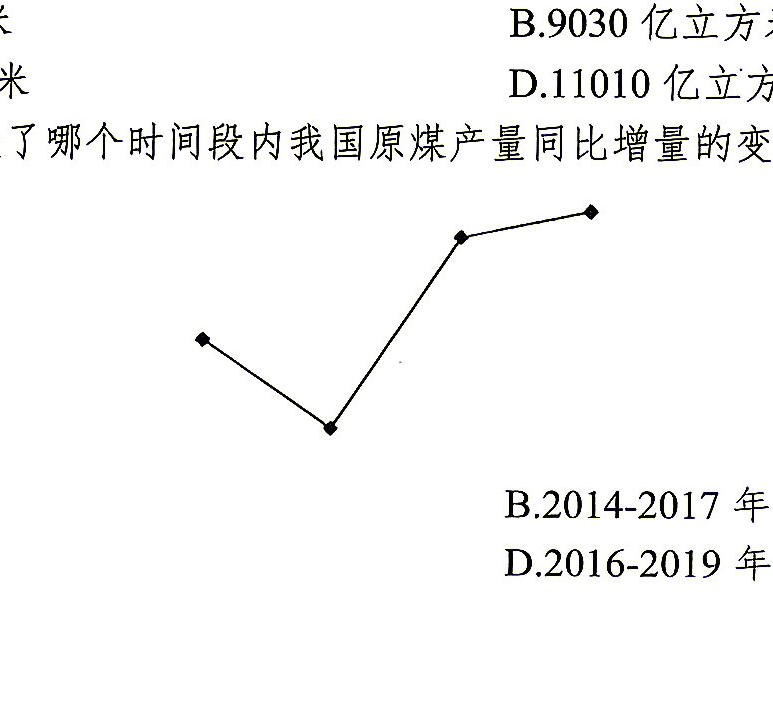
以下折线图反映了哪个时间段内我国原煤产量同比增量的变化趋势？
A. 2013-2016年
B. 2014-2017 年
C. 2015-2018 年
D. 2016-2019年
答案点击查看答案与解析
由材料可知，2013-2019 年我国原煤产量同比增量分别为 39.74-39.45=0.29 亿吨，38.74-39.74=-1 亿吨，37.47-38.74=-1.27 亿吨，34.11-37.47=-3.36 亿吨，35.24-34.11=1.13 亿吨，36.98-35.24=1.74 亿吨，38.46-36.98=1.48 亿吨，结合图形选择 C 项。
2018年，中国小分子靶向药物市场规模为114亿元，预计2022年中国小分子靶向药物市场规模将比2018年增长96.5%。
图1 2016—2021年中国小分子靶向药物市场规模（单位：亿元）
图1读数：2016年85亿元，2017年98亿元，2018年114亿元，2019年134亿元，2020年161亿元，2021年190亿元。
2021年，中国小分子药物领域投融资事件较2020年增加71起，投融资金额较2020年减少19.94亿元。
图2 2016—2020年中国小分子药物领域投融资情况
图2读数：投融资金额分别为6.64、10.62、48.23、186.70、372.52亿元；投融资事件分别为7、12、17、127、133起。
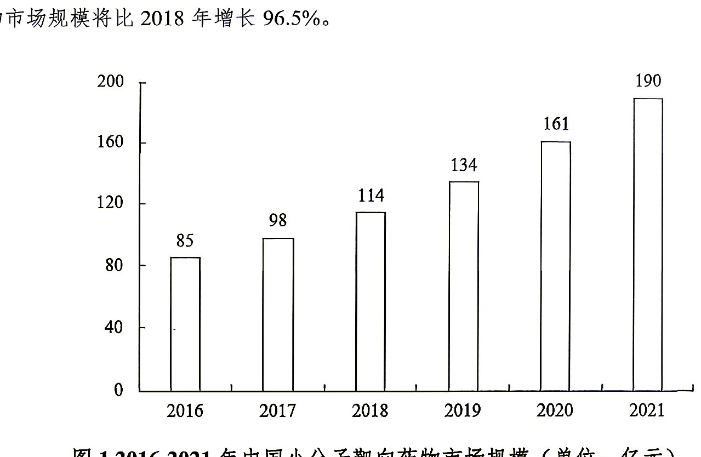
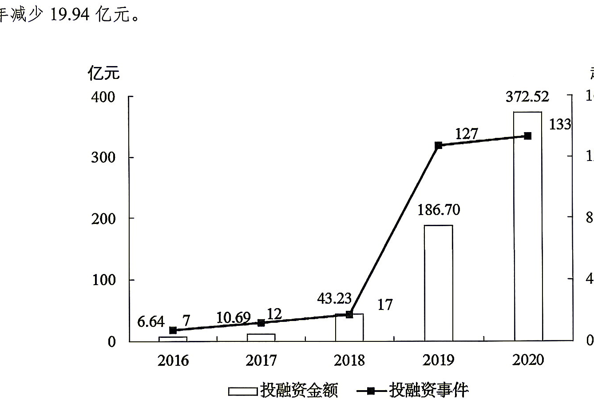
根据预计，2022年中国小分子靶向药物市场规模将同比增长：
A. 12.3%
B. 17.9%
C. 25.7%
D. 36.1%
答案点击查看答案与解析
由文字第一段可知，2018 年中国小分子靶向药市场规模为 114 亿元，预计 2022 年将比 2018 年增长 96.5%；由图 1 可知，2021 年市场规模为 190 亿元。所求为 114×（1+96.5%）÷190-1≈0.6×2-1=20%，选择最接近的 B 项。
另解：所求为 114×（1+96.5%）÷190-1。由于（1+96.5%）÷190 略大于 0.01，则原式略大于 114×0.01-1=14%，即所求略大于 14%，选择 B 项。
2021年中国小分子药物领域投融资中，平均每起投融资事件的投融资金额：
A. 不足 1.0 亿元
B. 在 1.0~1.5 亿元之间
C. 在 1.5~2.0 亿元之间
D. 超过 2.0 亿元
答案点击查看答案与解析
由文字第二段可知，2021 年我国小分子药物领域投融资事件较 2020 年增加 71 起，投融资金额较 2020 年减少 19.94 亿元；由图 2 可知，2020 年投融资事件为 133 起，投融资金额为 372.52 亿元。所求为（372.52-19.94）÷（133+71）≈350÷200=1.75 亿元，选择 C 项。
2017-2021年，中国小分子靶向药物市场规模同比增量最多的一年，其同比增长率比同比增量最少的一年约：
A. 少5 个百分点
B. 少 3 个百分点
C. 多5个百分点
D. 多3 个百分点
答案点击查看答案与解析
由图 1 可知，2017 年中国小分子靶向药物市场规模同比增长 98-85=13 亿元，2018 年为 114-98=16 亿元，2019 年为 134-114=20 亿元，2020 年为 161-134=27 亿元，2021 年为 190-161=29 亿元。
比较可知，2017-2021 年同比增量最多的一年为 2021 年，最少的一年为 2017 年，所求为 29÷161-13÷85≈29÷160-13÷85≈18%-15%=3%，即约多 3 个百分点，选择 D 项。
与2016年相比，2020 年中国小分子药物领域投融资事件数：
A. 翻了不到2番
B. 翻了4番多
C. 约翻了10 番
D. 翻了超过 15 番
答案点击查看答案与解析
由图 2 可知，2020 年中国小分子药物领域投融资事件为 133 起，2016 年为 7 起。由于 133÷7=19，介于 2^4 与 2^5 之间，即与 2016 年相比，2020 年投融资事件数翻了 4 番多，选择 B 项。
不能从上述资料中推出的是：
A. 2020年中国小分子药物领域投融资金额同比增长不足100%
B. 2016-2020年，中国小分子药物领域平均每起投融资事件的投融资金额不足1亿元的年份有2个
C. 2016-2020年，中国小分子靶向药物年均市场规模超过115亿元
D. 2017-2020年，中国小分子药物领域投融资事件数的年均增长率大于投融资金额
答案点击查看答案与解析
A 项，2020 年中国小分子药物领域投融资金额为 372.52 亿元，2019 年为 186.7 亿元，所求为（372.52-186.7）÷186.7=185.X÷186.7<100%，正确。
B 项，若某年平均每起投融资事件的投融资金额不足 1 亿元，即当年投融资金额<投融资事件数（不考虑单位）。由图 2 可知，符合题意的有 2016 年和 2017 年，共 2 年，正确。
C 项，由图 1 可知，所求为（85+98+114+134+161）÷5=115+（-30-17-1+19+46）÷5>115 亿元，正确，直接选择 D 项。
验证 D 项，年均增长率=增长次数√（末期值÷初期值）-1。增长次数相同时，比较末期值÷初期值的大小；由图 2 可知，2017-2020 年投融资事件数的末期值÷初期值为 133÷12=1X，投融资金额的末期值÷初期值为 372.52÷10.69=3X，前者小于后者，即投融资事件数的年均增长率小于投融资金额，错误。
图 全球玻璃基板行业专利申请量、授权量及中国占比情况（单位：项，%）
图读数：2013—2021年全球申请量依次为18643、17986、17753、17800、18637、18122、16191、11584、4687项；全球授权量依次为6761、7529、9100、9930、9190、8769、9238、8806、9573项；中国申请量占比依次为60.1%、59.0%、61.9%、66.3%、70.1%、72.3%、70.9%、74.2%、90.9%；中国授权量占比依次为55.2%、51.6%、55.1%、57.4%、58.2%、65.5%、68.3%、71.4%、76.8%。
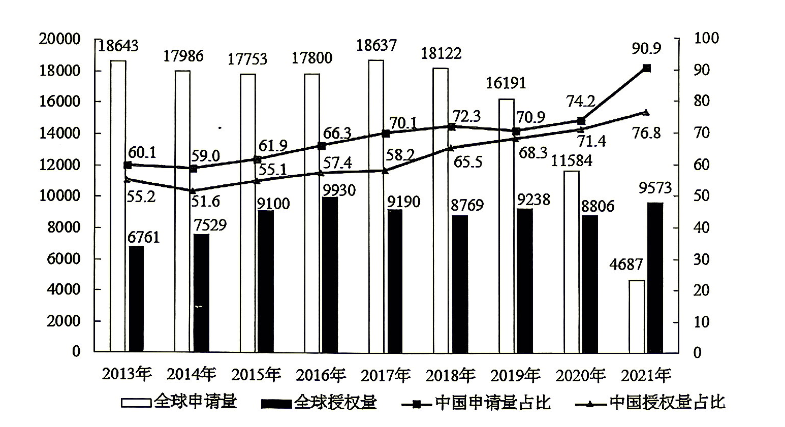
与2020年相比，2021 年中国玻璃基板行业专利申请量约：
A. 多 1100 项
B. 多4300 项
C. 少 1100 项
D. 少 4300 项
答案点击查看答案与解析
由图可知，2021 年全球玻璃基板行业专利申请量为 4687 项，中国占 90.9%；2020 年全球申请量为 11584 项，中国占 74.2%。所求为 4687×90.9%-11584×74.2%≈4700×10/11-12000×3/4=42XX-9000=-4XXX 项，选择 D 项。
下列关于中国玻璃基板行业专利申请量、授权量排序正确的是：
A. 2013年申请量>2016年授权量>2021年申请量>2018年授权量
B. 2013 年申请量>2018年授权量>2016年授权量>2021年申请量
C. 2016年授权量>2013年申请量>2018年授权量>2021年申请量
D. 2018年授权量>2013 年申请量>2021 年申请量>2016 年授权量
答案点击查看答案与解析
由图可知，2013 年中国玻璃基板行业专利申请量为 18643×60.1% 项，2016 年授权量为 9930×57.4% 项，2018 年授权量为 8769×65.5% 项，2021 年申请量为 4687×90.9% 项。
由于 18643>9930 且 60.1>57.4，则 2013 年申请量>2016 年授权量，排除 C 项；由于 18643 是 8769 的 2 倍多，65.5 是 60.1 的 1 倍多，则 18643×60.1%>8769×65.5%，即 2013 年申请量>2018 年授权量，排除 D 项。
由于 4687→8769 增长超过 50%，65.5→90.9 增长不足 50%，则 8769×65.5%>4687×90.9%，即 2018 年授权量>2021 年申请量，排除 A 项，选择 B 项。
2016-2020年，全球玻璃基板行业专利申请量中，中国申请量占比同比提升3个百分点以上的年份有几个？
A. 2
B. 3
C. 4
D. 5
答案点击查看答案与解析
由图可知，2016 年全球玻璃基板行业专利申请量中，中国申请量占比同比提升 66.3%-61.9%>3%，即提升 3 个百分点以上；同理，满足要求的还有 2017 年和 2020 年，即 2016-2020 年符合要求的年份共有 3 年，选择 B 项。
已知2021 年全球玻璃基板行业专利授权量同比增长x项，其中中国授权量占比同比增长y个百分点，而2021年往后全球玻璃基板行业专利授权量及中国授权量占比每年都分别同比增长x项和y个百分点，则到2025年，中国玻璃基板行业专利授权量将约为多少项？
A. 11433
B. 12069
C. 12439
D. 13575
答案点击查看答案与解析
由图可知，2021 年全球玻璃基板行业专利授权量同比增长 x=9573-8806=767 项，其中中国授权量占比同比增长 y=76.8%-71.4%=5.4%，即增长 5.4 个百分点。结合题目假设条件，所求为（9573+4x）×（76.8%+4y）=（9573+767×4）×（76.8%+5.4%×4）=（9573+3068）×（76.8%+21.6%）≈13000×98%=13000×（1-2%）=13000-260=12740 项，选择最接近的 C 项。
关于玻璃基板行业专利的相关描述，正确的是：
A. 2016-2020年全球玻璃基板行业专利申请量不足9万项
B. 2016年中国玻璃基板行业专利申请量超过1.3万项
C. 2014-2021年全球玻璃基板行业专利申请量、授权量变化趋势一致
D. 2015年全球玻璃基板行业专利授权量同比增速低于2014年
答案点击查看答案与解析
A 项，2016-2020 年全球玻璃基板行业专利申请量为 17800+18637+18122+16191+11584=17000×5+800+1637+1122-809-5416<17000×5=85000 项=8.5 万项，正确，直接选择 A 项。
A 项另解，若 2016-2020 年申请量为 9 万项，则平均值为 90000÷5=18000 项。观察图中数据，超过 18000 的部分和为 637+122<1000，不足以补给 11584 少于 18000 的部分，其他数据均小于 18000，故申请量不足 9 万项，正确，直接选择 A 项。
验证：B 项，2016 年全球玻璃基板行业专利申请量为 17800 项，中国申请量占比 66.3%，所求为 17800×66.3%<18000×0.7=12600 项=1.26 万项<1.3 万项，错误。
C 项，2014-2021 年全球玻璃基板行业专利申请量和授权量变化趋势不一致，错误。
D 项，2013 年全球玻璃基板行业专利授权量为 6761 项，2014 年为 7529 项，2015 年为 9100 项。2014 年同比增速为（7529-6761）÷6761=7XX÷6761≈1X%；2015 年为（9100-7529）÷7529=157X÷7529≈2X%，2015 年同比增速高于 2014 年，错误。